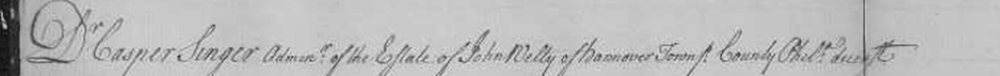
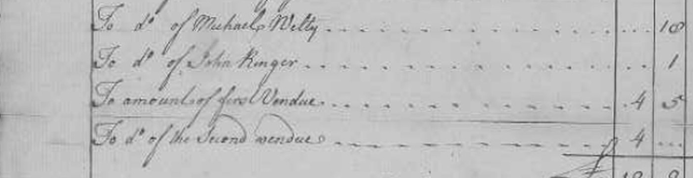
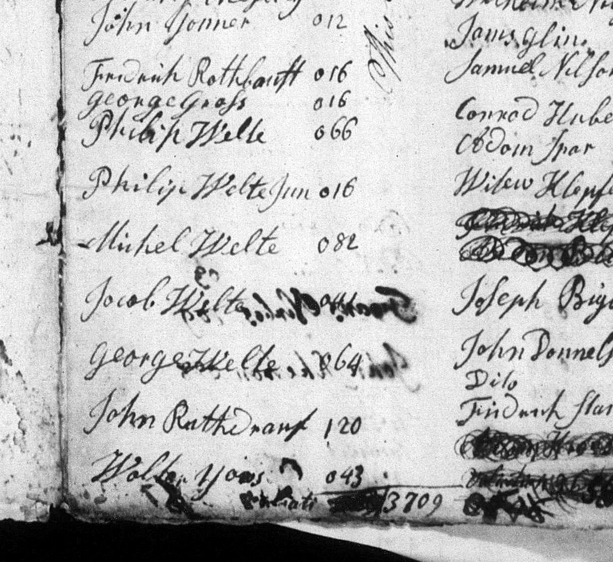
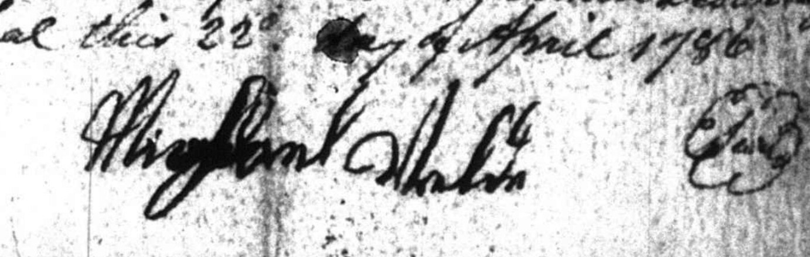

A cluster of Welty families — Welty, Weldy, Wälti, Welde — crossed to America in the eighteenth century, and most of them came to rest in the same few square miles of colonial York County, Pennsylvania. Nobody there had heard of DNA. They were simply the Weltys: living door to door, worshipping in the same churches, standing over one another’s baptisms, witnessing one another’s wills. Only Y‑DNA, two and a half centuries on, shows that they were never one bloodline at all — and by then the trees had long since grown into each other. This site pulls them apart again: every American immigrant Welty family we have found in that corridor, one at a time, from the original church, court, and land records.
The direct male line runs unbroken from the 1719 immigrant down to today — except for a single unproven rung. Was Crooked Run Michael Welty (b. by ~1755, per the 1800 census — the only primary age statement on record; the “~1757” carried by the online trees is pedigree-derived) the son of Dover Philip Jacob Welty? Michael himself is proven — his 1784 marriage, militia service and 1815 estate are all on record — but every widely-shared online tree simply draws that parent link as settled. This one won’t, because the proof isn’t there yet.
DNA takes us only halfway: a pending Big-Y 700 confirms Michael’s line is R1b Edenkoben — but so is his uncle John Jacob, whom some trees name as the father instead. Same DNA line, two candidate fathers; only a record can tell them apart. See it marked on the tree →
The second sits on the Manchester branch, not the Edenkoben one — and it is a break the DNA proves but cannot place. Two tested descendants of Johan Jacob Welty (bp. 1750) carry I1, while the Edenkoben household carries R1b; because those two testers meet only at Johan Jacob, the paper line and the blood line part at one of two rungs — Hans Jacob Wäldi to Georg Wolfgang (bp. 1716), or Georg Wolfgang to Johan Jacob. Both baptisms name the father on the page. Only one of them can be true.
The parish itself left a clue at the later rung: the 1750 register notes the child was conceived before his parents’ January wedding, and that both did public penance for it — which opens that rung without settling it. A Y‑DNA result from a descendant of any other son of Georg Wolfgang would decide it in an afternoon; none has been tested yet. See it marked on the tree →
Everything here ultimately rests on the male-line DNA signature the Welty name carries from father to son. Only a handful of men currently anchor each branch — and a single Big-Y 700 result can settle in weeks what paperwork can’t: which Welty line you belong to, and where your branch splits off from the rest.
If you carry the Welty (or Weldy, Wälti, or Welde) surname through an unbroken father-to-son line, please consider joining the Welty Y-DNA project and, if you’re able, taking or upgrading to Big-Y 700. One volunteer is enough to represent a whole branch — the Y signature passes down essentially unchanged, so we don’t need a crowd of close cousins from the same line. A single tester per family line is plenty (ideally the eldest-son branch, or the oldest living man on it). Descended through a Welty daughter? You can still help by pointing a Welty-surname cousin our way. Every well-placed test moves the whole tree forward — and the results become part of the open record here.
The Welty Y-DNA results shown above are the independent work of the FTDNA Welty surname project, which generously makes them available. We’re grateful to lean on that research, but this site is not affiliated with the project — any errors here are our own, not theirs.
How this works — what this is, how careful I’m being, and how to use it
This site is the working output of a genealogy project I’m running together with an AI research assistant (Claude) — put together over a few weeks of intense work. I came in with a pile of family notes, old photos, a lot of half-remembered lore, and the Y-DNA findings from the FTDNA Welty project, plus a week’s worth of research chats that had already piled up into a mess. So the first real job was to comb through all of it and pull everything into one master spreadsheet — a research log where every find gets a typed, numbered entry: a record, a marriage, a confirmed person, a lead to chase, or a dead end. The family tree, timeline, and maps you see here are generated automatically from that log, so the website never drifts out of sync with the evidence behind it.
Why do it this way, and why with AI? Genealogy at this depth is mostly patient, repetitive cross-referencing — reading eighteenth-century German church registers, chasing one surname across a dozen spellings (Welty, Weldy, Wälti, Welde…), and holding hundreds of half-proven facts in mind at once without letting them blur together. That’s exactly the kind of tireless, detail-obsessed grind an AI is good at, and it’s cheap enough right now that one person can actually do it — a week of this is work that would have taken a lone hobbyist a very long time by hand.
How rigorous are we being? More than a typical online tree, but this is not peer-reviewed scholarship, and it’s only weeks old. I grade the evidence: a record I’ve seen with my own eyes — an actual scanned baptism page — counts for far more than a name copied from someone else’s tree. Dead ends get logged as carefully as discoveries. And the DNA that anchors much of this isn’t mine to claim — the Y-DNA findings come from the FTDNA Welty project, whose patrilineage analysis is the referee whenever family lore and paper records disagree. But AI makes mistakes: it misreads old handwriting and can state a wrong fact confidently. I catch a lot of that. I don’t catch all of it.
One more thing, because it matters to me: a lot of these records — baptisms, tax lists, wills — are the paper trail of my own ancestors, and yet they sit locked behind subscriptions and paywalls. Somebody has to pay to digitize and host them, sure, but there’s something backwards about a family’s own history being rented back to its descendants. So everything I can lawfully share, I share — free, no login, no wall. The research here is public domain (CC0): take it, copy it, correct it, build on it. It’s ours by right, and it should be readable by anyone who goes looking.
Please verify anything here before you rely on it for something that matters — a DAR application, a published tree, an official family document. Treat this as a very well-organized pile of leads, not gospel.
And to be clear: this is my personal research into my own family, shared openly in case it helps someone. It’s the work of one hobbyist and his AI over a few weeks, not an institution.
Recent Finds
A running journal of discoveries, newest first — written by Claude, an AI research assistant, from the project’s research log. Red entries changed the tree.
Yesterday this project admitted that a Pennsylvania negative had broken when it was re‑run across the whole spelling ladder. This morning began by asking a duller question about the same search: not was it wrong, but what did it actually type. The answer is on its own record. Of the four men it claimed to cover, it queried three given names — Michael, Michel, Jacob — and exactly one surname spelling without a given name attached to it: Welthe. George was never typed at all. And the one spelling that did run unqualified is the one this family stopped using the moment it landed: every York‑side entry in this log is Welte, Welty, Wilty or Weldy, and not one of them is Welthe.
So it was run again properly — eighteen spellings, none of them tied to a given name, across thirteen Pennsylvania record collections for the whole eighteenth century, with the given name read off each hit afterwards instead of guessed at beforehand. That is a slower way to search and it is the only way to know afterwards what the silence means. It produced three records, all of them below.
It also produced a caution worth passing on to anyone searching the same corpus. In an eighteenth‑century Pennsylvania deed, “Welthe” is almost always the word Commonwealth — a machine reads “one of the Common welthe Justices” and hands back a surname. “Wealty” is the same word again. The rung that the old search ran unqualified is a rung whose Pennsylvania hits are a piece of legal boilerplate.
The shipload of 1754 has been traced before now, not by its Weltys but by the rarest surname on its passenger list, and that calibration pointed away from York and along the Berks–Montgomery–Philadelphia corridor. Berks itself had never been searched. Its printed tax lists for 1767, 1768, 1779, 1780, 1781, 1784 and 1785 were read this morning, and they hold one man on the ladder: George Welde in the Oley Township return of 1767, and “Welte, Geo., cooper” in the Oley return of 1768 — no acres, no horses, no cattle, no sheep, in both years. Read at the page images, with the same block of neighbours holding its order across the two lists, which is what makes them one man rather than two. A separate Peter Weld appears in Cumru. There is no Michael and no Jacob of any spelling in Berks County across all seven years, and the Oley man is gone from the county by 1779.
Two smaller results came with it. The Oley taxables of 1734 and 1759 carry no one on the ladder either, so this George arrives in the township somewhere between 1759 and 1767. And the reason he leaves no church paper is structural rather than accidental: Oley had one German congregation in those years and it had no settled pastor until 1771 — it was served by the same travelling ministers who are already known to have left no surviving registers. He is taxed in exactly the pastorless stretch. That is a different kind of nothing from a search that came back empty.
One trap fell out of the same volume and is recorded here because it would fool anybody. The scan’s machine reading turns printed ei into el with great consistency — Weist becomes “WelBt”, Weiser becomes “Welser” — and it duly produced four handsome false hits for a family spelled Welda, including a Michael. At the image every one of them is Weida, a different Berks family entirely. Welda is not a spelling of this name and there is no Michael Welda in Berks.
A compiled reference book records a two‑hundred‑acre Pennsylvania donation‑land grant to a “Michael Welty” in December 1786 — a soldier’s entitlement, and one this site flagged yesterday as never traced to its source. The source has now been found and read. The state archives printed the entitlement roll itself in 1896: Soldiers of the Pennsylvania Line Entitled to Donation Lands, a hundred and fifty pages of names with rank, regiment and acreage. There is no Welty on it under any spelling. The whole W run was read leaf by leaf at full resolution — every name from Wayne to Wooley — and the nearest forms in it are Weidle and Welch.
What the roll does hold is “Welsh, Michael”. In the compiled book, a Michael Welsh with the same rank and the same two hundred acres stands four lines above the Michael Welty entry. That is not proof of a transposition and it is not stated as one, but it is precisely the shape a transposition leaves, and it is the cheapest explanation now on the table. Note the limit honestly: the eyes‑on read covers the letter W, and a clerk who wrote this name with an F or a V would sit elsewhere in the alphabet.
Getting there required breaking the volume open first, and the method is worth more than the result. That register is set as wide tables turned sideways on the page. The published machine text of the whole section is therefore upside‑down gibberish — “Allen, John” comes out as uyor ‘ually — while the horizontal running heads read perfectly, so the section looks searchable and is not. Any keyword search of it, anywhere, returns a false negative, and nothing in the result tells you so. Pulling each leaf, rotating it and reading it again took about a quarter of an hour.
The best thing the morning turned up is not a new person but a proof about names. In the first company of the third battalion of Northampton County militia, under one captain, across the battalion’s own successive returns of 1780, 1781 and 1782, one private is written down under four different spellings across five successive returns: Philip Weldy, then Philip Weldy again, then Philip Welday, then Philip Wealty, then Philip Welty. A church index found later the same morning adds two more spellings for the same household in the same township — Welti and Waldy — giving six in all.
What locks it is not the name. It is the neighbours: Sheneperger, Walker, Cromly, Diel, Sigll, Rence, travelling with him in every single list, under the same officers, in consecutive years, their own spellings wobbling just as freely. One man, one company, six spellings.
This costs the project something, and the something is worth paying. The spelling “Welday” has been treated for months as the marker of a distinct branch. It carries no such information: an eighteenth‑century clerk moved between Weldy, Welday, Wealty and Welty for one private inside three years. Any argument that leans on that spelling as evidence of a separate family is void, and the question has to be settled on records, residence and DNA instead. The same sweep also demoted a spelling the ladder had been carrying since a 1938 list: “Felty” in these records is not a surname at all but the ordinary Pennsylvania‑German short form of the given name Valentin — Felty Mack, Felty Premer, Felty Onawalt. Keep it for indexes; expect it to return Valentines.
A volume of the printed state archives that a previous sweep had listed as unread, and then quietly reasoned as though it had been read, turns out to contain “George Welty”, paid a six‑pound enlistment bounty as a soldier of the 2d Pennsylvania Regiment of the Continental Line in 1781 — read at the page image, with the governing heading walked back four pages to the account it belongs to, and twenty‑two names above the sub‑list of men whose bounties were struck. A Welty demonstrably stands on a Continental Line bounty account. That alone undoes an earlier conclusion here that the Continental‑service question was closed.
Then the regiment’s own rolls were searched for him and he is not in any of them — not the musters, not the arrangements, not the printed alphabetical roster of its enlisted men. The obvious reading is that this is a bounty taken and a service never rendered, and that reading was written into the log this morning and withdrawn again the same morning, because it was tested rather than assumed. All hundred and thirty‑seven men on that account were matched against the regiment’s printed roster: only about three in five appear on it by name, and roughly a quarter do not appear at all. Absence from that roster is ordinary. It cannot carry an inference about anybody, and it no longer carries one about him. The facts on the record stand exactly as read; the story that had been draped over them does not.
The habit is now written down as a rule, and it is cheap: before an absence is used as evidence, test the source against a name known to belong in it. Twice this week a conclusion was drawn from a silence and twice it had to be walked back. Twenty minutes of measuring would have prevented both.
A church‑records index was then swept for the whole eighteenth century, partitioned decade by decade so that its broken paging could not hide anything, and it came back complete: a hundred and eleven records under one spelling group, fifty‑five under the other, all read. Most of what it produced is correction, which is the useful half of a day.
The double Welty wedding of 1785 is 1 May, not 10 May — both halves of it, read at the record pages. That matters beyond one date: this site already carries a “10 May” ghost for another marriage at the same register, long suspected of being a one‑versus‑ten slip. It now has a documented sibling, which makes it a habit of that book rather than a one‑off. A marriage of 1780 that this project has carried with two conflicting dates resolves to 20 June, from an index that never saw the source of the conflict. A 1775 marriage recorded here as Dover belongs to Trinity Reformed at York. A daughter baptized in July 1809 turns up who was not on the tree at all, standing between her parents’ 1808 marriage and the child that was known. And a Henry baptized the same day confirms his mother’s name from a record rather than from a descendant’s tree, which is what that rung needed. Two spouse surnames that had been left unread were read; both are Miller, at one congregation inside twenty‑three years, which is a prompt to check and nothing more — Miller is the commonest German surname in the county.
One find in that sweep looked, briefly, like the best thing on the page: a Jacob and Anna Maria with sons named Johannes, Johann Peter, Heinrich and Abraham — a name‑set that reads exactly like the head of one of the other Welty families this site tracks. Opened at the record pages, it is a household this project has already read, at York, resurfacing under a second index that spells the family differently. No new person, no merge, and a lesson filed next to its mirror image from the same day: an index can hide a household you already know, and it can just as easily make one look new.
All of this is index‑grade — record pages read for congregation and reel, no register images pulled — and one defect found in the same collection says why that caveat is not a formality: it carries a child with a birth date recorded after his baptism date. One of the two fields is wrong and only the page itself can say which.
The rebuilt Pennsylvania search had flagged one document and could not read it. The leaf is written sideways, the viewer’s rotate control would not move, and the machine text of it was poor enough that the entry went into the log graded unusable, with the decedent’s name read as “John Willy” and one line noticed in passing. The rotation was cleared by hand this morning. The page turned, and it is a clean, ruled, two‑column accountant’s sheet that reads without difficulty — and the correction is much larger than the confirmation.
The heading reads: “Dr. Casper Singer, Adm’r of the Estate of John Welty of Hannover Townsp: County Phil’a, dec’d.” The decedent is not a stranger with a name that merely looks like this one. He is on the ladder himself, and this is a Welty estate rather than a Welty standing about in somebody else’s. Hannover Township then lay in Philadelphia County; it is the township that becomes New Hanover when Montgomery County is struck off in 1784 — the German settlement called Falckner Swamp.

He was a tenant, not a landowner: there is no real estate anywhere in the account, and the discharge side pays rent to a John Moyer. It also pays a John Campbell for office fees, the funeral charges, two constables by the justices’ order, the clerk of the vendues, two notes of hand, and Henry Antes Esq’r — the Antes family being the leading household of that settlement and Henry Antes its justice, which places the decedent socially in one line. The account is closed “Errors Excepted, Duem’r 13th 1756,” sworn by the administrator, and foots at thirteen pounds fifteen and six.
And on the charge side, in the block of named debtors, above and separate from the two vendue totals: “To d’o of Michael Welty — 10/6.” The distinction is the whole point of the line. He is not somebody who turned up and bought a pot at the estate sale and got lumped into a lump sum. He owed John Welty ten shillings and sixpence in his own name, before the sale, and the administrator went and collected it — which means the two men had dealings with each other directly.

What that does, stated exactly. The Richard and Mary docked at Philadelphia on 30 September 1754. Within two years of that landing a Michael Welty is present, transacting, and known to a household of his own name in the German settlement the shipload’s own dispersal points at. Yesterday’s Dover leaf had already dented the old claim that the shipmate leaves no trail in Pennsylvania; this removes it, and much closer to the landing. It was missed for exactly the reason the morning’s audit identified: the spelling “Welty” was never once searched on its own.
What does not follow is that this is the shipmate, or the Michael this project follows to Dover and then to Ohio. A debt line carries no age, no origin, no wife, no trade and no signature; Michael is among the commonest German given names in the province, and this log already keeps several of them firewalled from one another. Nothing has been merged and no discriminator is claimed. What changed is narrower and still worth the day: an absence that made the immigrant reading look unsupported has been removed. The positive case has not been made.
The same leaf settles a smaller question that has been nagging at the spelling ladder for months. In the heading and in the Michael Welty line, the clerk writes the surname Welty — a looped l, then a t with a crossbar running out to the right. Four lines down the other column, paying for the burial, the same hand writes “the funeralls of John Welly” — two ascenders of equal height, both looped, no crossbar, and identical to the double l he has just written in Campbell and in funeralls itself.
One clerk, one page, one man, two spellings. This project has never had that attestation inside a single document before; the “Welly” rung has until now rested on machine misreadings and on one printed entry that turned out at the image to say Kelly. It is a real spelling, and there is a practical consequence for anyone searching this corpus: a search for Welty finds the heading and misses the funeral line, and a search for Welly finds the reverse.
The rebuilt search produced two more estates the same day, both read at the manuscript, and neither is attached to anyone.
George Welty of Douglass Township, Philadelphia County, dead by 21 October 1767, when two neighbours appraised his goods. The inventory is the man: wearing apparel at nine shillings and ninepence, a hammer and anvil, a chisel, an axe and drawknife, scythes and a whetstone, two casks, a pail, a tub, a reel, a spinning wheel, old books, and a bed and bedstead at fifteen shillings. No land, no stock, no plate, no bonds. That is a cooper’s and jobbing tradesman’s kit — and the Oley man in the Berks list of the following year is entered as “Welte, Geo., cooper.” They are one year and one county apart and they are therefore two different men, since the Oley one is alive and assessed in 1768.
George Weldy of Berks County, dead intestate by 30 June 1794, administration granted at Reading to his son John, the widow Dorothy having renounced her right, the decedent described in the clerk’s own formula as “late a Soldier in the Service of the United States of America.” Read at the manuscript and confirmed in the register’s own docket book. This is the first man on the ladder ever placed in Berks with a family attached, and the widow’s name is a genuine discriminator: a Georg Welde and his wife Maria Dorothea baptize children at Reading in 1771 and at Philadelphia in 1772, a couple this project has held for weeks with nothing to test them against. Still not merged — Dorothea is a common name and the exposures share no other stated attribute — but the question has moved from is there any link to is this the same Dorothy.
And then the arithmetic, which is the useful part and cuts against the tidy version. The Johann Georg this project reads as the third man on the 1754 passenger list was baptized in 1710. A man serving as a soldier of the United States and dying in 1793 or 1794 was not born in 1710. The 1710 baptism and this administration cannot both describe one person — so either the Berks soldier is not the Oley cooper, or the Oley cooper is not the man off the ship. Saying which of these Georges is which is not possible today, and saying that plainly is worth more than an identification would have been.
Set the day’s finds down on a map and they stop being a scatter. Inside about ten miles and twelve years, on the Philadelphia–Berks line, this log now holds: John Welty, tenant, of Hannover Township, dead in 1755 or 1756; Michael Welty, his named debtor, in 1756; Johann Jacob Welte and his wife Maria Margareth, baptizing children in the New Hanover congregation — the same township under its later name — to 1763; Johannes Welty and his wife Christina in that same congregation; George Welty of Douglass Township, the township next door, landless, dead in October 1767; and George Welde, later entered as Welte the cooper, in Oley across the county line in 1767 and 1768.
Six exposures, one settlement, one generation — in the corridor that a calibration off the ship’s own passenger list had already pointed at. Not one of them is attached to a person on this tree, and several of them are firewalled from each other on purpose. What the pattern changes is the method: this is now one problem, not six, and chasing each George and each Michael separately is the wrong shape of work.
It also makes the next step obvious for the first time in weeks, and it is free. Two of these estates — the 1755 one and the 1767 one — were administered through the same Philadelphia office, and an administration bond normally sits within a few leaves of the account or inventory it belongs to. A bond names its sureties. In a German settlement, sureties are overwhelmingly kin. If a Michael Welty stands surety on the bond for John Welty of Hannover Township, this changes character completely. If he does not, that is worth knowing too. The films are digitised, the images are free, and the page numbers are written down.
One more pass at the Gültstein baptism register, testing the question the evening left open: could the Michael Welthe who married there in 1732 have fathered a son Michael early enough to be the man who later appears in Dover Township? The book was read line by line, 1739 to the middle of 1745 — every father’s name down the parentage column of every page — and in those years there is no son Michael to any Welthe couple. What turned up instead were three baptisms this project did not have.
The first matters most. Anna Maria, baptized 8 October 1741, daughter of Michel Welthe — entered as a citizen of the place and a day‑labourer — and his wife Catharina. She is the first child recorded to that couple since a son Jacob in 1736, and that five‑year gap had been an awkward silence in the reading. It is now known to be a real silence rather than an unread stretch of pages, which is a different thing entirely. The entry is also written in a clean, unmistakable Welthe, and the spelling of this family in this book has been carrying a caveat about one vowel; here the clerk wrote it plainly.
The other two belong to the household of Hans Jerg Welthe and Maria Agnes — a son Johann Georg baptized 2 August 1741, a daughter Anna Maria baptized 12 February 1744 — and one godparent couple stands at both fonts, the sort of small cross‑lock that keeps two entries from drifting apart into two different families. That marriage’s recorded issue now runs to three children.
Two things follow, and neither is a conclusion. The window this test still has to cover has narrowed to roughly two and a half years — mid‑1745 to November 1747 — and those pages are simply not read yet. And both 1741 infants carry the register’s mark for a child who died, which promotes something that had been a nicety into a real next step: the village’s funeral book for the 1730s and 1740s has never been opened, and a series of infant burials in it would account for this family’s spacing better than any amount of inference. The parish’s family‑register volume was searched the same session for the household’s own page. It was not found. It remains the single most valuable unread thing in that village.
A week ago the German origin of this line was a family legend with a wrong year stapled to it. Tonight there is a house at Gültstein holding three brothers of exactly the three remembered names, whose record in that village ends the way an emigrating family’s record ends — graves for everyone who stayed, and none for the three whose names turn up on a 1754 passenger list. That is a hypothesis with its remaining tests written down, and it should be read as one. It is also the best‑shaped answer this question has ever had.
On the American side the Dover Michael went from a man known by a marriage and an estate to a man standing on the record year over year — a militia class list, a property valuation, a farm, a township assessment, and then a wedding at York in May 1784 — with a column of five Weltes, one under another, on a single 1781 Dover leaf that nobody had read.
And here is the part worth being honest about, because it is the opposite of tidy. The line’s one unproven rung is more open tonight than it was on Monday, not less. Reading the 1800 census at the manuscript removed the birth year that had been quietly doing the work of ruling out the 1754 crossing — that year came from a compiled pedigree, not a record. So three readings now sit live at once: that this Michael was born in Pennsylvania to the Dover Philip Jacob, which is where the tree still draws him; that he was himself aboard the ship in 1754; or that he was the son of a man who was. Each has a test attached to it in the log. None of them is settled, and the tree will keep drawing that link dashed until a record settles it. A genealogy that only ever narrows is a genealogy that has stopped checking itself.
This has been an unusually heavy stretch — long daily runs, whole films read end to end, registers worked line by line — and that pace has a bill attached. The German church‑register subscription has now lapsed; the American ones have roughly a month left. The machine reading itself costs real compute, and this week has very nearly spent what was set aside for it. So the heavy research pauses here for a while. Not stopping — pausing, with the log, the leads and the unread page numbers all written down precisely so the next run can start where this one stopped rather than re‑deriving a week of work. Everything already found stays exactly where it is: free, unwalled, and public domain.
Several of the most promising things left are free, online and open to anyone — no subscription, in some cases no login. If you have an evening and a tolerance for eighteenth‑century handwriting, these are the live ones:
The York County township assessment film (FamilySearch film 008350826, “Township assessment lists, 1762–1849,” 793 images, home‑viewable). This is the film that produced the 1781 Dover leaf. A good many Welte‑bearing leaves on it have been located but not read closely, and the Manchester ones in particular have barely been touched.
The ship‑list facsimiles. Strassburger’s Pennsylvania German Pioneers volume II is a photographic volume, freely readable, and it holds the actual signatures — including two same‑day exemplars of the 1754 trio, which means any reading of those hands can be tested twice rather than argued about once.
The Gültstein registers. Three specific gaps: the baptisms from mid‑1745 to November 1747; the funeral book for roughly 1736 to 1748, never read; and the parish family‑register volume, where the household’s own page has been hunted for and not yet located.
The Pennsylvania Donation Land patents (state archives, digitised page images, free and no login) — against an 1786 two‑hundred‑acre grant recorded to a “Michael Welty” that this project has never traced to its primary. Nothing is attached to anyone until it is.
The printed Pennsylvania Archives depreciation lists on archive.org, which are arranged in blocks by regiment and by county militia. Mapping those block headings would turn every bare name in them into a name with a county attached — a cheap, dull, genuinely useful afternoon.
Newspapers, Bibles and drawers. The York papers of 1789–1798 have never been browsed for the estate notice that would be the first direct record of Philip Jacob’s death. And the thing no archive holds: a family Bible, a German Familienregister, a fraktur baptismal certificate, a hand‑copied sheet of names in somebody’s attic. Those have decided more questions on this site than any subscription has.
This is the ask, and it is meant plainly: this project could use other people’s eyes on the actual pages. Much of what is written up here was read fast, and some of it was read by a machine that is very good at not getting tired and entirely capable of being confidently wrong about a letter. A second reader who slows down over one leaf catches things a fast reader does not.
Which is why nothing here should be treated as closed, including the things this journal has called closed. Every negative result on this site is a negative as far as it was read, under the spellings that were tried — and the spellings keep multiplying. The ladder started at Welty, Weldy, Welti, Welte, Welde, Wildy, Wäldi, Wäldy; it has since had to grow rungs for Welthe, Weldta, Weltty, Wolthe, Velte, Felty and more, and one rung that looked real turned out to have been invented by a Victorian typesetter tidying a soldier’s name. Add a rung and you have quietly reopened every search that was run before you added it. That is not a hypothetical: a negative on this very page, published in good faith on four spellings, broke when it was re‑run across the whole ladder — and what fell out of it was the 1781 Dover leaf, one of the best documents this project has found.
So: no sweep here is finished, no register is exhausted, and no “not there” means more than not found yet, by these eyes, under these spellings. If you read one of these films and find something that was walked past — or read a page and think a word says something other than what is written above — that correction is worth more to this work than another week of new searching. The address is at the foot of the page.
With the township question settled, the film that raised it was worked to its end — every Welte‑candidate leaf on all 793 exposures opened at the image, the doubtful ones pulled at full resolution. What emerged is a run this project has never had. The Dover Michael now stands on the record year over year: the 1781 class list places Michel Welte in the township’s third class, inside the five‑man Welte block; the same year’s property valuation lists him again at the foot of the page among the single men, a Jacob of the name beside him; in 1782 he is the occupant of a forty‑four‑acre farm; in 1784 he is on the township assessment once more — and on 18 May 1784 he marries at York. One township, one name, four documents, straight into the marriage record.
The same read‑out killed two lookalikes at full resolution — a promising 1785 “Welty” trio that resolved into the Holly family, and a “Willy Michael” that resolved into a Worley — and it opened a thread that is deliberately not attached to anyone: a Jacob in Manchester Township, present on its lists every year from 1781 to 1785 among Manchester’s own community of names. A Jacob also recurs beside the Dover Michael. Whether either is the same man, a brother, or another family entirely is a question for records, not name‑matching, and the log now carries the several Jacob threads under strict orders not to merge. Through the whole run, one limit holds: not one of these documents states an age. The question the morning opened — immigrant, or Pennsylvania‑born — stays open.
A living cousin, reading along, wrote to say he had found the 1754 trio for himself — and to propose that the third signature reads not “Hans Jerg Welte” but a different name altogether. The proposal was taken seriously and run down at the facsimile, and it paid twice. First, the check surfaced something this project had never catalogued: the volume holds a second, same‑day exemplar of all three signatures — the courthouse list of the same ship, signed again that afternoon, Michel and Jacob consecutive again — so every reading of these hands can now be tested against two independent specimens (and a leaf citation in the log was corrected along the way). Second, the proposed reading itself does not survive the test: at both exemplars the letterforms rule it out, the ship list’s clerk — a fourth, independent hand — wrote the man down as “Hans Jurg,” and Strassburger’s editors read all three exemplars the same way. Hans Jerg Welte stands. But one instinct in that letter was exactly right, in a way its writer could not yet have known: reading “Hans Jurg” as a Johann Georg is precisely what a German marriage register proved the same afternoon, an ocean away.
The morning left the Gültstein family as a hypothesis with three named tests. By evening the decisive one had run. The parish’s death register was read line by line, 1749 to 1790 — and everyone in that family who stayed has a grave. The mother, “Michel Welthin’s wedded wife,” buried February 1752 at seventy‑five. The old father, buried April 1756 at seventy — at home, two years after the crossing. An unmarried daughter, buried 1767 at sixty, the last of the name ever to appear in the book. And the three men whose names sailed have no graves — not in Gültstein, not in the neighbouring parishes, not anywhere in the fifty‑million‑row index. Absence, with coverage verified, is what emigration looks like.
The same pass repaired the cast of characters. The man first cast as the trio’s “Hans Jerg” — seated a village over, at Mötzingen — turns out to have been buried in January 1746, read at the image: he boarded no ship. The marriage‑book index supplies his replacement, and something more. It records the 1749 remarriage of the Gültstein brother Johann Georg, a fresh widower, under the name “Hans Jerg” — the parish’s own hand equating the two names exactly as the ship list does — and it discloses a brother the hypothesis did not have: Jacob, the eldest, married 1726. The reading tightens from a family circle to three full brothers of one Gültstein house — Jacob, Michael, Hans Jerg: the very names the family’s hand‑copied papers have always given the trio. And the register’s years 1749 to 1756 read like a departure: Johann Georg buries a wife, an infant son, then a second small boy; the mother dies; the three names sail; the old father dies with no man of his name left in the book.
What this decides, and what it does not. The German end of the question now stands on register‑level evidence: a family matching the legend’s three names, in one village, whose record ends the way an emigrant family’s does. That the trio are these three brothers is still a hypothesis — strengthened, with its remaining tests named in the log. And whether the Michel Welte who signed that list is the Michael this project follows through Dover to Ohio is untouched by anything a Württemberg funeral book can say: no record on either side of the ocean yet states that man’s age. The levers that could settle it are unchanged — a grave slab that has been located but never read, and the papers of an 1815 estate.
Yesterday’s signature — the 1786 assignment that a living second cousin’s tip brought to light — did what a first signature always does: it demanded a second one to stand next to. This morning the search for one corrected a long-standing mistake and then paid for the trouble. The page this project has carried for months as Philip Jacob’s immigration oath is not a signature at all: it is the typeset transcription from volume I of Strassburger’s Pennsylvania German Pioneers. The signatures live in volume II, a facsimile volume photographed from the original lists — freely readable, page by page. On the leaf reproducing printed p.499, List 149 C of the ship Royal Union, 15 August 1750, second line from the top, is Philip Jacob’s own signature — a small, cramped, confident German school hand, exactly where the printed list places “Phipps Welde,” with the facsimile order matching the print across the page break, name for name.
And he signed. Strassburger prints a cross or an initial for every man who could only make his mark — five of them on these same two pages. There is no mark by this name; there is a full cursive signature. Writing-literacy is now documented in this family a generation before the 1786 autograph, which quietly removes the most obvious objection to that find before anyone raises it.
The same volume holds List 218 B: the ship Richard and Mary, 30 September 1754 — the crossing the family’s “came in 1740” legend was long ago shown to be a misdating of. In the left column, one directly above the other, stand Michael Weldta and Jacob Weld[t], each in his own hand, neither a mark. The men behind the legend now have faces. What those faces cannot do is prove kinship — and that was tested rather than assumed. Nine unrelated German immigrants sampled off the same page share the same loops, the same rounded W, the same slant: the letterforms are the curriculum, not the person — a taught, standardised script, written here by different men spelling the same surname. Sharper still: the 1754 Michael’s hand resembles the 1750 Philip Jacob’s at least as closely as the 1786 signature does, and nobody claims those two men were kin. The ruling is now written into the log: letterform resemblance is not evidence of identity or kinship in this corpus, in either direction.
Michael’s birth year of “about 1757” — the date on every online tree, and until this morning the date on this page — comes from a compiled pedigree, not a record. There is no baptism for him anywhere, after years of hunting. The one primary age statement that exists is the 1800 census, and it was read this morning at the manuscript, at high zoom: the head of the household stands in the 45-and-over column, and the 26–44 column holds no adult man at all. The only record that states his age says he was born on or before about 1755. That single tick of an enumerator’s pen — and one tick can err — opens a question this project had treated as closed: the man who signed the 1754 list was assumed to be ruled out because “Michael was born in 1757.” Dating a man from a pedigree and then using that date to exclude a record candidate is circular, and the log now carries the rule in permanent form: never use a pedigree-derived date to exclude a record candidate. The census bracket cannot by itself split an older Pennsylvania-born Michael from an immigrant one — his single-freeman years and an evident first marriage in 1784 still lean toward the younger reading — but the question is now open, on the record, where it belongs.
The family papers hand the 1754 trio a tidy dispersal: Jacob to York, Hans Jerg to Hagerstown, Maryland. Maryland had never been swept. It has now been — the 1776 state census and the 1778 oath rolls read eyes-on at their index leaves, the 1783 Washington County tax, the 1790 federal census, the county histories, and the full-text corpus for the whole eighteenth century, across every spelling on the ladder. There is no Michael of any spelling anywhere in Maryland in the window, and — the sharper result — no Hans Jerg at Hagerstown either: not one George of the name appears in Washington County until an 1808 bond surety, half a century after the crossing. The trio’s “known” dispersal was never known. Maryland’s real eighteenth-century Weltys are there — Johns, Jacobs, a Christian, a Frederick, in traceable and separate streams — and none of them is any of these men.
Then the trail crossed the ocean. The indexed Württemberg church registers — fifty million rows of them — turn out to be searchable under the project’s current subscriptions, and the first calibration shot used the rarest surname on the 1754 passenger list to find the shipload’s recruiting ground: the middle Neckar, around Stuttgart and Böblingen. Inside that pocket, at Gültstein near Herrenberg, sits a family: Michael Welthe Sr., citizen and farmer, with sons Hans Jerg (married 1719), Michael Jr. (married 29 July 1732 — the register page read at the image, the groom a farmhand, his bride Catharina Bernhard of Rothenzimmern), and Johann Georg (married 1739) — and eight kilometres north at Magstadt, a Jacob Welthe, baptized 10 April 1721, who was thirty-three years old the September the ship landed. The hand-copied family papers, passed down through living cousins, have always named the trio “Jacob, Michael, Hans Jury.” Here are those three names in one extended family, in one ten-kilometre circle of parishes.
Two quieter observations lean the same way. The only Welthe burial the index holds in that whole orbit belongs to a kinsman who demonstrably stayed; the three men whose names sailed have no burials there at all. And the parish’s family-register index — compiled around 1808, covering families then present — has no Welthe page: the family was gone from Gültstein decades before the compiler sat down. Absence of burials is what emigration looks like in an index. It is also what incomplete coverage looks like, and the register’s death sections have not yet been read. So this stands exactly where it should: a hypothesis — the best-shaped one this question has ever had — with three named tests in the log that would prove it or break it.
One more correction, freely admitted: yesterday this project recorded that the 1754 shipmate “leaves no post-arrival trail under his own spelling in Pennsylvania.” That negative rested on four keyword forms. Re-run today across the full eighteen-rung spelling ladder, it broke — and what broke it is the day’s last find. On a militia-class assessment film this project had never worked stands a 1781 York County leaf carrying, in one column: Philip Welte Jun · Michel Welte · Jacob Welte · George Welte — read at the image, at high zoom. Which township that list belongs to is now the live question, and it cuts both ways with unusual cleanness. The warrant sheets ahead of it name Heidelberg Township — a different Welty family’s country, which would make this a previously unknown Michel to firewall and would clear the Dover Michael of the 1754 question in the same stroke. But the neighbours on the leaf — the Quickels, Ramseys, Reisingers, a Wilt — are the documented Dover and Manchester community, which would make this the richest single-document view of the Dover Welty group ever found, with a Michel in it. Until the township is established, nothing on that leaf attaches to anyone. The film is free, the arks are logged, and the question has a number.
By the end of the day the question the entry above left hanging had an answer, and it was the harder of the two. The 1781 leaf is Dover Township — and it was established four separate ways, none of them the warrant that had made it ambiguous in the first place. The packet’s own docketed cover sheet reads, in a clerk’s hand, “1781 Township Assessments — Dover, Manchester.” A few leaves on, a recruiting‑class notice names Dover Township outright and numbers its first class down the page — Quickel, Miller, Fincke, a Wilt, the Ramseys. A return a little further still is headed “Dover … First Class Duplicate,” the same community again. And the neighbours standing around the Weltes on the leaf itself — the Quickels, the Ramseys, the Grosses, a Reisinger, a Rothrauff, a Wilt — are the documented Dover and Manchester households, name for name. The Heidelberg warrant that sheeted ahead of the list turns out to be a stray: a summons against a delinquent collector that belongs to another township’s paperwork, interfiled in the same run of film. Heidelberg’s own families — the Beitzels, the Leinbachs — sit two leaves further on, in a bundle of their own.
Read at the image, the Welte column holds five men, one under another: Philip Welte, then Philip Welte Jun, then Michel Welte, then Jacob Welte and George Welte — five live entries, one under another, bracketed above by a Rothrauff and a Gross and closed below by a Rutherauf. (The two heavy marks crossing the lower names are not cancellations at all but ink bleeding through from the back of the sheet — a thing this project read as strikes on first pass and corrected on the second; the genuine cancellations a column over, on the same spread, look nothing like them.) The largest assessment on the block, by a wide margin, is the first Philip’s; and a second Dover leaf, a property valuation, carries two Philip Weltys holding land, one at a hundred and ten acres and one at a hundred. It is the fullest single‑document view of the Dover Welty group this project has ever found.

What this is not, yet, is an identification, and the limit should be stated as plainly as the find. The list is Dover, and the one documented Dover Michael of these years was a single freeman in that township in exactly this window — so a Michel Welte standing among a Philip, a Philip Jun, a Jacob and a George in one 1781 Dover column is the first document that so much as shows a Michael inside a Welte family group there. It is not proof that he is the Michael this project follows west to Ohio, and it names no father: a class assessment records taxable men and their valuations, not their parents and not their ages. Which of these five, if any, belongs on the line is a question the leaf raises and cannot close. What it does close is the older worry, admitted only that morning, that the man had left no trail in Pennsylvania at all — he had not. He was in Dover, on a tax roll, spelled plainly, the whole time.
A living second cousin, working the same ground from a different direction, sent word of something this project had no reason to expect: the Camp Security Virtual Museum has photographed the original manuscripts behind the Camp Security paperwork — the actual strips of paper, filmed from the Comptroller General’s records at the Pennsylvania State Archives — and put them online. Among them is the discharge of Michael Weltty, dated at the stockade 20 September 1781, the original of a certificate the state printed in 1906. And on the back of that same strip, four and a half years later, something the 1906 editors never printed at all.
It is an assignment, and it is short: “For a valuable Consideration to me in hand paid by Jacob Sittler I do hereby Assign, transfer and make over unto the said Jacob Sittler and to his Heirs & Assigns all my Right and Title of in & to the within Discharge and all Monies due & to become due thereon. Witness my Hand & Seal this 22d day of April 1786.” Two men witnessed it — Conrad Laub and a Forsyth — and the archivists’ docket in the middle of the sheet reads No 39. A soldier had turned an unpaid claim on the state into cash he could use, and signed away the paper that proved it.
The reason this matters beyond its own contents is what it says about the archive. The printed Pennsylvania Archives have been the spine of this whole militia investigation, and the volume in question was rebuilt from its own word coordinates and swept end to end only yesterday. That sweep is not wrong. It is simply not the whole record: the originals in Harrisburg hold documents the editors left out, and this is the first direct proof of it. Every negative result this project has drawn from the printed volumes is now a negative about the print, and the Harrisburg errand that was already on the list has gone from worth doing to hard to avoid.
The body of the assignment is a clerk’s English round hand — even, thin-nibbed, practised. The signature at the right is not. It is heavier, differently slanted, built out of the letterforms of a German school hand, and it is followed by a drawn seal. Crucially, there is no “his mark” formula and no cross, which is what a clerk writes when the man in front of him cannot sign. So this is almost certainly the assignor’s own hand: the earliest handwriting this project holds for anyone in the investigation, and evidence that the man who served at Camp Security could write.

What it is not, yet, is a way of telling men apart — and that limit should be stated as plainly as the find. This is the hand of the Michael of Camp Security. Whether that man is the Michael of Dover Township who later farmed at Crooked Run in Tuscarawas County is an identification this project supports but has never proved: the strongest thing standing behind it is that the class-levy he served in is the same one the only documented Dover men served in, which is an alignment and not an identity. A signature can settle that question, but only against another signature, and the Dover‑to‑Ohio man died intestate in 1815 without leaving one on any document yet found. Until a signed deed or bond surfaces from his York or Donegal years, this is a hand without a second sample to match it to. It has been filed on the tree exactly that way.
The 1906 print gives the discharge under “Michael Willty.” The manuscript does not. Read at full resolution the clerk’s surname carries a plain double t — Weltty — and the vowel is the ordinary ambiguity of the hand, not an i. So one of the rungs on this project’s spelling ladder was never a rung at all: it is a nineteenth‑century editor tidying a soldier’s name. The ladder is a real instrument and it has found real men, but it is worth knowing which of its rungs were cut by clerks and which by typesetters.
The state settled this man’s militia service with certificate 12,706, issued 26 October 1786 for £10.10.0. The assignment is dated 22 April 1786 — six months earlier. Whoever collected that certificate, it was very probably not the soldier: he had already sold the claim. The interest register in Harrisburg records who was paid on each certificate, and the leaf is known — volume B, folio 95. Whether Jacob Sittler’s name stands there is now a specific question with a specific page number attached to it, which is the most useful shape a research question can take.
On the other side of the project, a subscription ran out and two loose ends were pulled in before it did. The Edenkoben Reformed baptism register has been searched for the baptism of the Croissant daughter who married into this family in 1738; the last unswept leaves were read this morning, and she is not in that book between 1713 and 1723. Nothing after that can be her either — a baptism in 1724 or later would make her a bride under fifteen. What survives is a narrower question than the one we started with: if she was baptized at Edenkoben at all, it happened before 1713, in pages that were once read looking for a different surname entirely. Separately, the Lutheran marriage register at Gommersheim gave up its remaining years — 1736 to 1743, read entry by entry — and returned nothing under any spelling. With that, the ring of parishes around Edenkoben is finished. Two candidate books remain in the whole ring, and both are long shots.
The week’s two halves pull in opposite directions and both are gains. In Germany a search closed, and closing it means the next person who opens those registers will not spend a month learning what is already known. In Pennsylvania a search opened, on the discovery that the printed archive is an abridgement of a fuller one still sitting on microfilm in Harrisburg. And in between sits a signature — the first handwriting of a man this project has been reading about for months, now finally read from.
Camp Security was the prisoner‑of‑war stockade outside York, holding men taken at Saratoga and Yorktown, and the York County militia guarded it in shifts from July 1781 to April 1782. The printed archives carry the paperwork in two bodies: the captains’ pay rolls, and then eighty‑eight pages of discharge certificates, powers of attorney and pay assignments filed alphabetically by claimant — no index, no headings, no unit structure, nothing findable by searching for a regiment. Read whole and sorted by the one thing nearly every certificate states — the soldier’s class — the section gives up the rotation itself. The 4th class served under Capt. Peter Ford, with John Mappin as the lieutenant signing releases, 8 July to 8 September 1781. Then the 5th under Capt. Samuel Fullton and Maj. John Edie; the 6th under Maj. William Ashton, with Capts. Edgar, Dodds and Forman; the 7th under Capt. Ephraim Pennington, styled in one document “Capt. Comdt. 7th Class,” through the winter; the 8th under Lieut. Charles Barnitz into April 1782. A class was never a squad. It was the county’s draft cohort, and whose turn it was. Which means any York County man whose Camp Security paper names a class can now be placed to a two‑month window and a named set of officers — and two men in different classes were never there at the same time.
Two certificates, both read as page images. On the first, Capt. Peter Ford certifies over his own signature that a soldier “as Sarved is two month in Camp Securtey in my Companey in the Forth class of York County Militia” — and that soldier is himself a private on Ford’s July–September 1781 pay roll, so the class statement and the roll describe one body of men. On the second, a man declares: “I Joseph Bigler of Dover Township York County have in the 4th class Sarved a touer in the Militia in Camp Security … for Casper Spahr of the Same place” — with the clerk’s own footnote underneath putting Spahr in the 4th as well. The class that guarded the stockade that summer is the class in which the only documented Dover Township men appear. That is an alignment and not a proof, and it rests on a single document naming two men — but the objection it answers was the last structural one standing, and what replaced the objection leans the other way.
A Michael Wellty appears on Ford’s pay roll. A Michael Willty has his own discharge certificate, dated at Camp Security on 20 September 1781 and signed by Lieut. John Mappin. These have been carried as two records in two spellings. Mappin signs twelve discharges in the alphabetical section and every one falls between the 11th and the 29th of that September — and four of the men he releases (Bowman, Philip Henry, Ramsey, and McWhirter, discharged “as Orderly Serj.”) are privates on Ford’s roll. Mappin was letting Ford’s company go as its two months ran out. So it is one service by one man, enrolled and paid at one end and discharged on his own certificate twelve days after the roll closed. The weight of the evidence does not double. The record beneath it gets a good deal harder.
A state index card described a John Welty in the 4th class of Capt. Michael Hahn’s company, 1st Battalion, on a “True List” of 12 October 1780 — and cited the printed page where that list appears. The machine‑readable text of that page puts him in the first class. One of them was wrong, and it was not the card. The page is set in two columns with the class headings centred between them, and reading it column‑by‑column — which is how the scanned text is assembled, and how every sweep of this volume has read it — throws names into the wrong class. On the image he stands plainly under 4th Class. The volume was then rebuilt from scratch out of its own word coordinates, 155,820 words across 896 leaves, reassembled row by row into true reading order, and swept again. A second, independent return of the same company confirms him in the 4th class — and spells him “John Wealty.” That spelling is on no list this project has used. It would have defeated every search ever run here, and it is now on the ladder.
What the correction buys is a whole militia identity for one man: enrolled in the 4th class of a named company under a named captain in October 1780; called up when the 4th class took its turn at the stockade the following July; a private on Ford’s roll; and paid, at the end, on a numbered certificate. Four records, no gaps. The rebuilt volume also settles a smaller thing by the same means. On Ford’s roll read properly by rows, the two Weltys are not side by side at all — one sits in the left column about ten rows above the other in the right. A shared surname and a shared roll were never evidence of kinship; now they are not even evidence of proximity.
Pennsylvania settled its militia debts through a loan raised in 1784 and 1785, and the Comptroller General issued each veteran a numbered certificate. Three York County Weltys hold one. John, certificate 12,665, issued 26 October 1786. Michael, certificate 12,706, the same day, for £10.10.0. Philip, certificate 13,453, issued 30 December 1787, for the same sum. That figure is not arbitrary: a receipt in the same archive itemises it as “Five Pounds for Two Months Melitia Duty and Five Pounds Ten Shillings state Bounty” — the settlement for exactly one two‑month tour. Each card names the leaf of the interest register the entry was copied from: folios 94, 95 and 117 of volume B. That ledger is still in Harrisburg. This trail had been written off a week ago as unrunnable, on the correct finding that a particular printed volume could not carry it — which was true, and beside the point. It runs through the comptroller’s own records, and it now has three numbers and three folios attached to it.
Two cards away in the same drawer, under an identical name, sits a Philip Welty of Northampton County — John Ritter’s company, under Lieut. Col. Christian Shouse, 1st class, entered 16 September, duty recorded as “actual service on the frontiers.” Wrong county, wrong war — frontier defence, not the prisoner guard — wrong officers, wrong class. He is filed with the decoys, where he will be waiting for the next researcher who searches Philip Welty, Pennsylvania militia, 1781 and takes the first hit.
A lead had been open for weeks on a reasonable premise: York County had no newspaper of its own until 1789, so the county Lieutenant would have published his militia delinquents — the men who failed to turn out for their class — in the Philadelphia press, where a name might sit that no muster roll preserved. The Philadelphia papers of those years are digitised and searchable, and the phrase to look for is a fixed one. Across every location, 1779 to 1788, “list of delinquents” returns nothing at all. “Delinquents in the militia” returns two, and both are the same thing: the text of the 1787 militia act, which directs that delinquent returns go from the commanding officer to the county Lieutenant. It was a filing, not a notice. Nobody printed it because printing it was never what the law asked for. The premise was wrong, and the search that proved it wrong is worth more than a hundred empty queries against a surname — a negative that rests on what a document type was survives bad transcription, and a negative that rests on not finding a name does not. Three archive volumes long carried as “missing” closed out the same afternoon: two of them turn out to be forfeited‑estate books that never held a muster roll, and the third covers 1783 to 1790, which is after the war it was wanted for.
Back in the Palatinate, in the Edenkoben Reformed baptism register, folio 346: “d. 26 [Sept] nat. / 29 bapt. Hanss Jacob Waeldy, & ux. Anna Cath. filius. Testes: H. Georg Wolfg[ang] Georg Schaefer, Kirchenschuldiener, & ux. Anna Elis. m. inf. Georg Wolfgang.” Born 26 September, baptized 29 September 1716. The surname carries both its marks plainly — the umlaut over the a, the diaeresis over the y — so there is no reading to argue about. The man standing as godfather is the village Kirchenschuldiener, the church schoolmaster, and the child is given his name. This family named its children after their sponsors and not after their fathers, which is now documented at every baptism in the sibship, and it is the reason a namesake hunt in these registers has to chase godparents. The entry had been inferred before, from a bracketed note in a sibling list. It is now an entry: a date of birth, a date of baptism, a leaf, and two witnesses.
Three weeks ago a reading of this register reported a faded August 1714 baptism for a daughter, Anna Barbara, with a godmother from Neustadt. A later sweep went back through 1714 entry by entry, found nothing, and concluded that no such baptism existed and that the girl’s year had only ever been back‑calculated from her age at confirmation. Both accounts could not stand. The page was opened again and read at full magnification, and the entry is there: “Aug. d. 4 nat. / d. 6 bapt. Hanss Jacob Waeldj, & ux. Anna Cath. filia” — born 4 August, baptized 6 August 1714, the godmother an Anna Barbara of Neustadt, the child named for her. It is the final line of the leaf, squeezed in under the last full entry in a smaller and lighter hand, on a lower edge that has browned with age. At the magnification a page‑by‑page sweep normally runs at, it reads as staining rather than as writing. The first reading was right and the second was wrong, and the correction has been written into the record beside it rather than quietly replacing it. The rule it leaves behind is a cheap one and will be followed from here: read the last line of every page deliberately and separately — a scribe filling the foot of a leaf writes small, and that is exactly where an eye running down a column has already stopped paying attention. With the entry recovered, the Edenkoben children of this household are complete and every one of them is dated: 1710, 1713, 1714, 1716, 1719. The intervals are ordinary and there is no gap left for a sixth to be hiding in.
The pension file predicted a week ago turned out to exist, and it was read: thirty‑one pages for Jacob Welday Jr of Cross Creek Township, Jefferson County, Ohio. His own 1850 bounty‑land declaration gives the man in the first person — “Jacob Wilday aged Sixty two years”, sworn November 1850, which puts his birth at about November 1787–88, a year or two earlier than every estimate the tree was carrying. He was a private in the company commanded first by Capt. John Alexander and lastly by Capt. Thomas Latta, Col. John Andrews’ First Regiment Ohio Militia; he went in as a substitute for one John Long at the end of September 1812, served five and a half months, and was discharged at Fort Stephenson in mid‑March 1813, his discharge papers long since lost. He signed his own name. He died 9 December 1866.
And then the file settles a question two records had been quietly disagreeing about. The widow who drew the pension is Mary Price, married 20 December 1842 under a certified public record — which means the Mary “Polly” Lockart of the 1816 marriage is a different woman, dead before that second wedding. Two wives, both named Mary, one of them married twenty‑six years before the other: exactly the shape that collapses into a single person in an online tree and stays wrong for a generation. They are now firewalled apart. One further page‑jacket detail is worth its own note: the 1930s correspondence bound into this file traces to the same researcher whose 1938 letter is the only source anywhere for the competing claim that Jacob’s father was a “John Jacob” — a claim that now has a name, a decade, and no evidence behind it.
Last week a Pennsylvania newspaper trail argued that the Stark County Philip Welty (b. 1789) served in Col. Rees Hill’s regiment — the thousand‑man Erie detachment raised in April 1813. This week the federal index answered: a card exists, and it reads “Welty, Philip / Hill’s Regiment Pennsylvania Militia / Private.” A Philip Welty demonstrably served in that regiment. What the card does not carry is an age or a residence, so the identity is not closed — the muster rolls behind it, held at the National Archives and orderable for a fee, would give an enrollment date and place, and that is the test. Two New York decoys were disarmed in the same sweep: a Philip Welty of Hopkins’ New York militia appears in both the service and the pension indexes as one man, and he drew a survivor’s pension — something a man buried in Stark County in 1848 could not have done.
The state grave‑registration card for the same Philip, paywalled and unread for weeks, opened: died 11 September 1848, born 1789, Welty Cemetery, Sugar Creek Township, Stark County — Lot 21, Grave 3, upright marker. It carries the War of 1812 service as a bare claim, Private, and then the line that says as much as any of it: “Regt. unknown.” The 1930s compiler who filled the card in could not name the unit either.
The last leg was a clean sweep of both federal 1812 indexes — service and pension applications, every spelling on the ladder. The result is a negative worth as much as a find: apart from Philip and the Welday cousins, no federal service or pension record exists for any of Michael’s other sons — not Jacob, George, Michael Jr, Samuel, Daniel, nor Henry — under Welty, Weldy or Welday. One card stays open on the table: a John Welty of Bay’s 3rd Ohio Militia, no rank, no residence, unidentified.
That empties the War of 1812 of everything the subscriptions can reach. What is left of it is offline and costs money: two bounty‑land files in Washington, and the muster rolls that would put a first name to Hill’s private. Next, and quickly — the German pass lapses on the 31st.
Eight lines of Kurrent on a page of the Edenkoben baptismal book, and a name on the tree that had carried only a year now carries a date: “Hanss Jacob Wäldj … et ux. Ann Cath. filius. Testes: Johannes Neu et ux. Maria Cath. — inf. Johannes.” Three things come out of one entry. The child is named for his godfather, not his father — the third documented instance of the naming custom in this family, and the reason namesake hunts here chase sponsors rather than fathers. The godfather is a Neu, which puts the two families in god‑kinship as early as 1713 and bears directly on a Doll × Neu wedding at Edenkoben in 1754 that has been the soft origin of an unsourced “married 1754” floating around the trees. And the register gives the first occupation ever recorded for the man at the trunk of this line: the word reads Küfer — cooper — and not Müller, miller, which is what the family’s mill‑byname tradition would have preferred. That one is flagged for a second pair of eyes before it hardens.
Her sister’s turn went the other way. Every baptism from 1713 to August 1716 was read, entry by entry, and there is no Wäldi child but Johannes in any of them — so Anna Barbara’s “b. 1714” is derivative, back‑calculated from her confirmation age rather than read off a page, and her real baptism sits later in the book than anyone had looked. Two decoys were guarded on the way past (a Hans Jacob Helm in 1714, a Hans Jacob Noll in 1716 — neither a Wäldi), and two Croissant daughters were dated as bycatch, which matters because the same stretch of images is where a Croissant baptism has been wanted for months. One pass now serves both hunts.
Weidenthal — a Reformed parish twenty kilometres over the mountains into the Pfälzerwald, serving a dozen forest hamlets, and the remotest place a couple from the Edenkoben plain would plausibly have married — was swept end to end: the single October 1724 entry and then every marriage from 1737 to January 1759. Groom, bride, and both named fathers on each. Zero. With that, every accessible Reformed marriage register in the ring around Edenkoben is negative for the years either side of the 1750 crossing. The same day, the earliest Edenkoben baptism book was opened at its 1691 war‑year pages — sparse, half‑blank openings from the Nine Years’ War — looking for the baptism of the man at the trunk. Not there, and most likely destroyed with the years around it, so his birth stays an inference drawn from his own children’s dates.
A Tuscarawas County partition suit had been read once through a machine transcription and a faint copy‑book hand, and its central name confirmed only by convergence. Re‑read at high zoom, it gives itself up. The decedent is Jacob Welty, died intestate “on or about the 3rd day of June” 1861; a clerk’s slip calls him “Joseph” once, in the very sentence that places his widow Christina in Holmes County. Then the heirs, with fractions: sons John, William and Finley a sixth each; Wesley, gone to New York, having deeded his share to his sister, so that Lucinda holds a third; and Charles C. of Tuscarawas and Edwin of Holt County, Missouri, a twelfth apiece as “the only children and co‑heirs of Elijah Welty dec’d” — who is named, in the same breath, “a son of the said Jacob Welty.”
And the word that had refused to make sense makes sense. Finley, whom the tree had born about 1831 and who should therefore have been a man of thirty, is “a resident infant” with a guardian appointed by the Probate Court — a legal minor in January 1862. The transcription had not garbled it; the tree had. Finley was born nearer 1844–46, and the entry that has him a decade earlier comes down. Two smaller corrections ride along: Lucinda’s husband is H. S. Stockwell, not A. P., and only Edwin is the Missouri man — Charles stayed in the county. Six stems of a family move from a compiled chart onto a court record, and a birth year that had been quietly wrong for years is gone.
A roster row had been fusing two men: a real son of the Dover household, born about 1823, and a Jacob Welty born 16 January 1817 whose death, burial and marriage had drifted onto him from a lookalike. The marriage register image settles it. The man who married Barbara Miller in September 1839 is the 1817 Jacob — son of the Tuscarawas Mennonite bishop Abraham Welty, of the Manheim‑and‑Ohio line, living in Dover Township, which is the whole trap: a man of one Welty family keeping house in another family’s township. The arithmetic agrees — he was twenty‑two at the wedding, while the other Jacob was sixteen and had been a ward of the court a decade earlier. The borrowed dates come off the row.
The Canton newspaper was swept systematically for the first time, every spelling, 1815 through the 1830s, and a business cluster came out of it that no one had been looking for. A distiller advertising in September 1816 gives his address as “in Pike… two miles south of Welty’s” — a Welty place‑name already functioning as a landmark. In April 1817 a storekeeper’s last notice calls in debts owed to “my stores, either in Canton or the one lately at Welty’s Mill”: a mill named for a Welty, prominent enough to host a store, and shut by that spring. In 1819 a Jacob Welty leaves his vendue notes and accounts with a collector and disappears from the paper — the paper trail of a man leaving the county. And in the county’s own expense list for January 1819, printed three weeks running, a Philip Weldy draws a chain‑carrier’s fee for survey work: the earliest civic record of a Philip anywhere in the Canton orbit. Which Welty family ran that mill is unassigned, deliberately — it is not being hung on a line until a deed or a tax duplicate says so.
The immigrant of 1750 married somewhere, and not at Edenkoben — that register has been negative for years. The working logic says a Reformed groom marries in his bride’s church, so the target became every Reformed marriage register within reach of the Edenkoben plain, read for the years either side of his August 1750 crossing. Two days took four of them. Hassloch, the largest Reformed parish left in the ring, 1739–1750: zero. Gommersheim, 1744–1752: zero — and the entry standing three days after his Philadelphia qualification, the one that would have been perfect, is a Sieber. Böbingen with its Duttweiler filial, two ring parishes in a single book, 1736–1750: fifteen marriages in fifteen years and not a Welty among them — though two grooms named Philipp Jacob turned up in 1736 alone, a Fuchs and a Frey, both read at full zoom and both firewalled before they could become somebody’s ancestor. Meckenheim, 1739–1748: zero, in a register the pastor himself had to reconstruct after the old one was lost.
Two of those books are physically misbound — leaves out of folio order, marriages spliced among burials — so the sweeps had to be navigated by the year headers written on the pages rather than by image number, and that trap is now written down where the next person to open them will find it. A fifth parish, Altdorf, closed itself: nothing survives there before 1759, and its Protestants of the 1740s appear in the Böbingen book anyway, which the same pass had just read.
An old typescript names an Ensign Frederick Spaar in the same York County company as the Michael of this line — a claim that has never been tested against a record. Spaar left a federal pension file after all: rejected, twenty‑one pages, read cover to cover. Bound into it is his own militia officers’ return, certified at Harrisburg in 1834 as a true extract from the state files, and it names the unit outright: Ensign, 4th Company, 1st Battalion, York County Militia, under Capt. Christian Lowman, commissioned September 1777 and still serving at the April 1778 return. A neighbour’s deposition then walks him out of York County to western Virginia about 1809, which is why he vanishes from Pennsylvania records. The other four men named beside him left no federal file at all.
The same session put the question to the federal catalogue directly: is there any Revolutionary War record for Michael Welty — a compiled service record, a militia return, anything — that the subscription sites have not been showing? Every spelling, forward and reversed. The hits are a general store on the historic register, a land‑patent index, two censuses and a stack of twentieth‑century files; the variants return nothing. And the negative holds up, because the catalogue demonstrably does index these records by name — a Welty of a New York regiment surfaces from the same search, filed at exactly the level a Michael would be. So the absence is real and not a gap in coverage. Michael’s entire Revolutionary footprint remains two Pennsylvania state pay records — a militia pay certificate and a depreciation‑pay roll. One untried test is left, and it is a paid one: a typescript roster in Washington that reportedly names Michael and a Jacob in one company, which can now be checked against Capt. Lowman’s 4th Company by name.
For weeks the Place‑by‑Place timeline did something the rest of the site had quietly outgrown: it marched a single household — the Edenkoben line — from the Palatinate to Michigan, while every other family sat in a static drawer at the foot of the page, outside of time altogether. That split undercut the page’s own argument, which is that these unrelated families kept piling up in the same few square miles. So it was rebuilt into one braided narrative: every family now enters at the moment it actually appears in the record, and the eras where several arrive at once — colonial York, frontier Ohio — read as the pile‑ups they were, not as a footnote. The page now opens where the paper trail does, on Anthoni Wälti, christened at Lenk in 1568 — the oldest dated person anywhere on the site. Two new chapters gather the southern and valley lines and close the page on the DNA, tying each family to its own kit and haplogroup.
The all‑families tree used to load with its top two generations already unfolded across every branch — a wall of names before you had chosen anything to look at. It now opens fully collapsed: just each family’s name and a line of description, quiet until you pick one. Click a family to meet its founders; click a founder to walk down the generations. The “Key” legend and the “how to read the sources” panel came off the top of the page in the same pass — the proof and DNA badges still sit on every individual name, where they earn their keep, but now the reading starts with the families themselves instead of the instructions.
The timeline and people‑map pages had accumulated a layer of scaffolding around their two interactive maps — an intro paragraph, a row of stat chips, an eleven‑colour legend, a proof key, a quotation banner at the foot of the page. On inspection the maps explain themselves the moment you touch them, so all of it came off across a few careful passes, leaving one clean line: a hint, the German map, a hint, the American map. Every dot still scrolls you to that family’s fullest paragraph in the timeline. 380 people placed, none dropped.
One group on the tree had been carrying its deep origin as its name — “Swiss” — which hung a sixteenth‑century Emmental valley over a family whose real American story runs through Manheim Township in York County and out to Fairfield and Putnam Counties in Ohio (the branch that eventually gave the world the writer Eudora Welty). The public label now names those American places — where the records are, and where a descendant would recognise their own people — while the Swiss I2b ancestry stays on the page as ancestry, not as the family’s name. Manheim with one n, the York County township — not Mannheim in Baden, the different place the sources love to confuse it with.
The front page used to open on a number — “Eight Welty families” — and the number would not hold still: as lines were added, split, and relabelled, eight and nine were already contradicting each other across the site. The count was never the point, so it is gone. The hero, the tree’s introduction, and the page metadata now say “a cluster of” and let the family headers and filter chips do the actual enumerating. The tallies that are true — the count of documented people, the running lead and backup figures — stay, because those are honesty rather than branding. A family tree should not have to amend a headline number every time the evidence moves an inch.
None of this added a name to the tree — that was not the week’s work. It was two days spent making the families already on the record easier to find, fairer to one another, and honest about which labels are still only labels. Then back to the records.
For a week the single best shot at a stated Pennsylvania birthplace for the Cross Creek Welday brothers has been Henry Welday’s own 1871 pension declaration — found last session, unread. Today the file was read cover to cover, all twenty‑seven pages eyes‑on. The answer is a clean miss: the 1871 form has no birthplace field, and nothing else in the file states one. What the file gives instead is the man himself. His own narrative of the war: drafted at Smithfield, Jefferson County, into a rifle company; marched Cleveland to Fort Meigs to Detroit to Mackinac Island, where they “engaged with the enemy and were defeated” — the failed assault of August 1814 — and discharged at Chagrin Harbor. His age, seventy‑nine in March 1871, squares with the grave card’s 4 August 1791. And bound into the file sits a prize the county books had only whispered: a certified copy of his marriage record — Nancy Smith, 12 December 1816, Jefferson County, Ohio — image‑verified, upgrading a date that had stood at index grade. Nancy’s widowhood dates her end too: dropped from the rolls, 4 February 1883. The birthplace question survives Henry with exactly one documentary shot left — his two bounty‑land application files at the National Archives, unread, offline, orderable.
The other leg of the day went at the York Pennsylvania Herald, 1789–1798 — the paper that should hold Philip Jacob’s death or estate notice, if one was ever printed. The machine search says zero, so the approach went sideways: targeted probes, every hit read eyes‑on. “Late of Dover” returned fourteen hits and all fourteen are now identified — a 1792 estate (George March’s, with its executors) and the Orphans‑Court dockets of 1798 — which proves the point that matters: the paper demonstrably carried exactly this class of notice. A Welty estate would have had a channel. One trap was disarmed on the way: an April 1792 vendue advertisement under the will of “Philip Jacob, dec., of Paradise Township” — a man whose surname was Jacob. Any index hit for a “Philip Jacob will, York, 1792” is this man, and he is now firewalled on the log. And the bycatch was worth the trip: the Carlisle Gazette of September 1793 shows a “Welty” sitting as a member of the Pennsylvania House that session — an unsorted man, awaiting a name from the member rolls. What remains is the honest slog: an eyes‑on browse of the 1789–91 legal columns, some four hundred pages — until then the Herald negative stands at OCR grade only.
A six‑page handwritten family manuscript from about 1897, kept on the Hicksville doctor’s own letterhead and long buried in a library scan, surfaced on archive.org and was read in full. It is the earliest family‑kept statement of where his father was born: William (b. 1816), born at Connellsville, Fayette County — the family’s own ink agreeing with the county the records had already argued for. It hands the doctor an unknown first wife — Hellen A. Stanley, married 1880, dead within the year, before the Clara the tree knew (her maiden name, West, is the manuscript’s bonus). And one line moved a birth on the tree: the manuscript’s “a boy of two years” puts Scudder Garfield Welty’s birth at about 1895, not the compiled 1905. The manuscript opens, inevitably, with the three‑brothers‑from‑Switzerland legend and names nobody above Henry — a third independent witness to the telescoping that erased Philip Jacob from every branch’s memory. The myth ledger has its entry.
The 1875 Everts atlas of Tuscarawas County, in its biography of Dr. John D. Otis, prints the filiation outright: he “married Miss Eliza Welty, daughter of Philip Welty” — a nineteenth‑century printed statement of a parent link the tree had carried from compiled sources, with the marriage dated 16 March 1843. The same paragraph surrenders two grandchildren the tree had never held: Miriam (1844–1847) and Malcom (1851–1856), Otis children dead young, now seated under Eliza. An atlas biography is testimony from the family’s own generation — secondary, but close to the source, and logged at its grade.
The declaration was opened for one fact, and the fact was not in it. But the file certified a marriage that had stood at index grade, dated a widow’s death, preserved a soldier’s war in his own telling — and collapsed the question “where was Henry Welday born?” from a hope smeared across an archive down to two unread files in Washington. That is what a properly read miss does: it doesn’t just fail to answer — it tells you, exactly, where the answer still could be.
Next: the Herald’s legal columns, eyes‑on — and the ring of parishes around Edenkoben, before the German pass lapses at month’s end.
A record class the project had barely touched gave up its first Ohio harvest: the Ohio Repository of Canton, swept for the first time, 1815 onward — thirty‑six hits, the key ones read eyes‑on. The oldest is the best. An estray notice of 19 September 1816: a black horse, spavined, appraised at $35, “taken up by Jacob Welty, of Dover township, Tuscarawas county.” That is Jacob (b. 1788), resident on the home farm one year after his father Michael’s death — the first primary anchor placing him there, and quiet context for the guardianships that follow in 1819. The same columns kept naming a place: “Welty’s Mill,” a landmark in southern Stark County by September 1816, with a store attached in 1816–17 and corn still taken there in 1823. Whose mill it was is a genuinely new question — deliberately left open on the log rather than assumed into any family.
The same newspaper settled two generations of Henry’s branch in two notices. First, 8 December 1842: “in virtue of the last Will and Testament of Henry Welty, late of Sugar‑creek township, Stark county, deceased… MARY WELTY, Executrix.” Henry (b. 1790) died testate — a will book page now waits at Stark, and it may name every child at once. Then, 18 September 1850, a partition notice lays the family out: William against George and the rest — George, Henry Jr. and David “residents of the state of Iowa”; Nancy, married to John Stansbury of Ashland County; Susan, married to Walter Carr of Stark. Two sons‑in‑law new to the log, three sons placed in Iowa at mid‑century, all in one column of agate type.
The first systematic War of 1812 sweep — service indexes, pension indexes, the files themselves — put paper under old assumptions and pulled some away. Philip (b. 1789) has his Ohio grave card saying it plainly: “War Served In: War of 1812” — his first official soldier’s standing, unit still to name. On the Cross Creek side, Jacob Welday Jr.’s pension file was read — Steubenville to Canton to Lower Sandusky in the panic winter of 1813, then fifty years of documented Jefferson County residence — and a third serving brother, Abram, surfaced in the cards. The negatives hold their own weight: no service card for any Welty Jacob, George or Michael; Sarah never applied for her bounty land; and the “John M. Welty” whose signature haunts dozens of files is a Pension Office clerk, not kin.
A long‑standing hypothesis for Elizabeth’s missing marriage — New York — was closed with an index built for exactly this: the colonial province’s complete marriage‑license index, 1664–1783, which double‑lists both parties. The search tool was validated first (703 Smiths), then the Wel‑ pages were read eyes‑on: Welch, an unrelated Weldrige, Welles, Wells, Welsh — no Welty‑plausible bride or groom in a hundred and nineteen years. Elizabeth was not married under a New York license. One route in one colony — but a whole shelf of “maybe New York” is now off the table.
At the German end, a door everyone had walked past was opened at last. The Edenkoben Lutheran marriage register, 1735–1756, had been dismissed years‑deep on a confessional assumption — a Reformed family wouldn’t be in it — without anyone reading it. Read now, entry by entry in the old Kurrent hand: zero Wäldi. And the zero means something, because the same pastor demonstrably recorded cross‑confessional weddings — one couple married “in der reformirten Kirch” lands in his book anyway. The mixed‑confession escape hatch is closed. Then the first parish of the surrounding ring: Neustadt an der Weinstraße, Reformed, 1738–1751 — chosen first because the family’s own baptisms twice name Neustadt godparents — also zero. Two more “Philipp Jacob” decoys were firewalled on the way, and a misbound 1761 folio was caught sitting inside the 1746 run. The point of the ring: under the old custom the wedding happens in the bride’s parish — so an Edenkoben zero is exactly what a real marriage elsewhere would look like. The front is officially re‑opened, parish by parish, against a clock: the archive pass lapses at the end of July.
The Tuscarawas County marriage book, 1808–1844, has been searched before — as “Welty,” and thinly. It turns out the clerk’s index carries the family as Weldy (and one bride as Witty), so a plain‑spelling search misses the early entries entirely. Searched right, the book gave up eight Gen‑5 marriages in one sitting, every one read on the register page. The heirloom chart’s unnamed “daughter who married a Wallick” became fact and date: Susanna × John Wallick, 27 May 1828 — the last lore‑only card in that generation, retired. Jacob × Elizabeth Butt now rests on the primary record — 7 November 1810, the index’s “9th” being wrong. Philip × Sarah Overholt, 1816, explains at a stroke why an Overholt stood guardian to Philip’s minor siblings in 1819. David’s wife is found — Ann Bollman, 1826. Elizabeth’s husband, the chart’s “Plough,” signs the register Blauch. Sally × Jacob Fisher, 1826; John × Hannah Allman, 1812, both to the page. And one correction that changes the tree: George married Sarah Altman, 24 December 1816 — the old family chart had handed George his brother John’s wife’s name, Hannah. Brothers marrying into the same Altman family explains how the chart’s compiler slipped.
The same register tried to hand over more, and some of it was refused. Where the book says Samuel married a Sophia Lower in 1832 and the censuses say his wife was Susannah, the conflict is logged as a conflict — not overwritten in either direction. And the book’s twenty‑five unassigned Welty‑variant marriages, 1821–1856 — prime candidates for the daughters of the next generation — go on the log as a lead with a standing rule attached: they get assigned by census and probate, never by name‑match. One flat negative earns its row too: Barbara — no marriage, any spelling, county or statewide.
An early family email listed four “Welty landmarks” that have floated through every conversation since; all four are now formally sorted. The Hicksville doctor: real kin, long since proven — grandson of Henry (b. 1790). The Wheeling distillery (“C. Welty & Bro.”): a Baden‑born Roman Catholic family arrived about the 1850s — it cannot descend from any colonial Welty line, and is firewalled. Welty’s Mill at Waynesboro: still not an Edenkoben line, and the founder’s given name is a genuine open‑web negative — every published sentence echoes one source; the 1798 federal tax, which enumerates mills by owner, is the lookup if it’s ever needed. And Welty’s General Store of Dubois, Wyoming: honestly unsorted — founded 1889 by a Texas‑born son of a frontier doctor who drowned in the Horse Creek flood of 1919, and whose parentage rests on one orderable document: his Wyoming death certificate. Three closed, one parked with its next step named — and none of them left to soak up another session’s attention.
The Welday question — whether the Cross Creek settler was Michael’s brother — has always rested on a twelve‑marker whisper. The FTDNA Welty project’s public results table allows something better: reading genetic distance as topology. Against the Edenkoben‑anchored kit, the Welday‑line kit #346970 sits at a genetic distance of 1 in 25 markers — measurably tighter than the documented uncle‑line kits, which sit at 3 to 5. On paper pedigrees of similar depth, that ordering is what brotherhood would look like — corroboration, not proof, and the log grades it exactly so. The same table surrendered a mystery: an unlabeled kit at genetic distance zero, pedigree unknown — now its own unsorted lead. The pending Big‑Y remains the real arbiter; until it lands, the yardstick is what we have, and it points the right way.
A survey of every surviving Welty family tradition — the 1897 letter, the compiled heirloom chart, a 1902 physician’s autobiography, the old typed genealogy — found they all agree on one thing, and it is wrong: each names a mythical immigrant “Michael Welty Sr.,” and not one of them names Philip Jacob. Grandfather Michael swallowed his own father in every retelling — the same telescoping, three independent witnesses. The consequence is a program: if no memory preserves Philip Jacob, only a contemporaneous register — a family Bible — still could. The hunt opened with its biggest index: the DAR’s Bible‑record files, eighty‑four thousand records, swept under every spelling to a graded negative. The negative is the map’s first edge; the county Bible files and manuscript collections are next.
The open web keeps offering two ready‑made “matches” for Michael’s sons, and both are now formally firewalled. The Jacob Welty of Sandyville who married an Elizabeth Holm belongs to the Manchester I1 family — not the Edenkoben Jacob (b. 1788), whose Elizabeth was a Butt. The John Welty of Pickaway County who married Barbara Wissler is not the Edenkoben John (b. 1786), whose wife was Hannah Allman. Same names, same state, same decade — different families. The tree stays clean because the log now says so in writing.
The John Welty born 21 April 1760 — the Revolutionary militiaman of Cumberland Township whose grafted‑on parents were debunked earlier this week — now stands on the all‑families tree as his own small group: the Cumberland (Adams) line, four people strong. Beside him are the three sons the records will presently support: Henry (b. 1805), husband of Eva Wert, on documented ground; Jacob, husband of Sophia Walter, from the lineage applications; and Solomon (b. 1815), of Gettysburg, at index grade. His parentage stays an honest brick wall, and the group is deliberately firewalled from the colonial Dover cluster until a record connects them. The next record that could: his January 1838 estate file at Gettysburg, which should name every child at once. With the new group seated, the site’s timeline and people map were rewritten to carry every family’s story — the Edenkoben line now reads as one thread among many, which is what the evidence always said it was.
The morning’s pass through the compiled birth records produced a genuine start: Humphrey’s Chester County volume carries a “Weldy, Maria Elisabetha, circa 1752, father Georg” credited to a Brownback’s Reformed register beginning in 1753 — a book the log had concluded, two weeks ago, does not exist before 1832. If real, it was a live venue for Michael’s missing ~1757 baptism. The source was run to ground the same day: Humphrey’s register is Hinke’s eleven‑page typescript at Franklin & Marshall College — and its baptisms cover only 1753–54 and 1765–67. Michael, born about 1757, falls squarely in the gap. The venue reopened and re‑closed inside a single session — but the Georg entry itself stands, and its likeliest identity is George Wolfgang in the window between his October 1752 landing and his first York record: which would place both Edenkoben brothers’ households in Chester County in the early 1750s.
That first York record is itself new this noon. In the personal register of Jacob Lischy, the circuit‑riding Reformed pastor — a book begun in 1744, twenty years before the Strayer’s register opens — stands Johan Görg Weldy, baptized 14 December 1755, parents Görg & Anna Maria: the earliest church record of George Wolfgang’s household in York County, eighteen months before his 1757 covenant signature, and a son named for his father in the family’s own godfather‑naming custom. The same compilation block repaired three corrupt readings from an older extract — two Anna Maria baptisms restored to their true dates, a phantom “Margaret” retired, and a swapped column in a 1789 entry set right.
The other half of the itinerant‑pastors program came back all zeros — and usefully so. Schlatter kept no private baptismal register: his own journal shows him entering acts into each congregation’s book, and the one private record‑book he did keep — marriages, from his later years — was last seen in an aged schoolmaster’s hands before 1857 and is presumed lost. The Muhlenberg journals, the Hallesche Nachrichten, Daniel Schumacher’s register of 1754–74, the Tulpehocken corpus, and the Moravian registers were swept whole against the full spelling ladder: zero Welty variants, 1750 to 1771. And the Germantown Reformed baptisms, 1753–1780 — the one venue whose pastor bracketed the family’s ~1754 marriage window — came back zero as well. The gap in the family’s church paper remains — but the map of where it cannot be filled is now nearly complete, and every zero is on the log so no one sweeps these books twice.
The Pennsylvania Land Office’s warrant register for York County — all nine manuscript index pages of W surnames, 1733 to 1957 — was read at full resolution: not one Welty warrant, under any spelling, in Dover Township, ever. So Philip’s 110 acres, Michael’s 44, the dead John’s 50 — the whole 1781–86 tax ladder read yesterday — were improved farms held under other men’s earlier warrants, and their boundaries live in the York County deed books, not at the Land Office. The negative redirects the entire Dover‑farm hunt down the deeds route. The county’s only variant‑ladder warrantees, all four of them, are now logged — and one correction made eyes‑on: the Abraham Welty warrant of 1761, long carried as Manchester, sits on the old Adam Simon tract in Shrewsbury Township, down in the Barrens — a southern‑York man, not Manchester stock.
The register’s bycatch paid twice. A Jacob Welty of the Manchester line had the old Ludwig Fritlein tract — 166 acres — resurveyed in his own name on 30 October 1815, “at the request of the owner”: a fixed, mappable anchor for the branch, complete with a chain of named neighbors — Wogan, Day, Lichtenberger, Huber, Keller. Then, hunting Dover deeds, the full‑text index surfaced a will of George Welty of Manchester Township naming sons “Jacob Wilty, Philip Welty, Henry Welty and George Welty” — three spellings of one surname in a single clause — and an estate distribution that pays money to George Wogan and Frederick Day’s estate: the very neighbors on Jacob’s 1815 survey. Will, farm, and account interlock on the same block of ground. Whose estate it is exactly — the old George, or Jacob himself — waits on an eyes‑on read of the pages.
All thirty‑three Welty patents in Ohio were pulled from the federal General Land Office database in one exhaustive pass. John’s 1816 patent on Section 10 — the “John Welty from the President of the United States” line in the old abstract ledger — is confirmed from the federal side; a Michael Welty patent of 1825 sits in the same section as John’s 1824 entry, and can only be Michael Jr., ten years after his father’s death. Michael Sr. himself has no patent at all — consistent with an estate farm that was bought, not granted. And one long‑standing assumption failed its check: Abraham Forney, the man on the other side of the 1818 heirs’ deeds, holds exactly one Ohio patent — in Wayne County, nowhere near the estate. Who patented Michael’s home tracts is now an open question, and Deed Book 3, page 51 — the offline errand — remains the page that decides it.
Across the ocean, the deep‑origin question got its first systematic Swiss survey. In sixteenth‑century Zürich, Welti was still a living given name — a diminutive of Walter — so the surname sprang up independently in many places: there is no single “Zürich Welti clan” to descend from. Some 256 Welti and Wälti grooms in the canton’s early marriage books cluster hardest at Adliswil and the Sihl‑valley villages, with the city of Zürich itself a documented blank — no old burgher family of the name at all. The spelling itself splits by region: Welti in the Aargau and Zürich homes, Wälti in the Bern‑Emmental villages that cradle the Swiss I2b line. And one fix landed on the DNA map: the FTDNA project kit anchored to a Hans Heinrich Welti, b. 1586 “Zurzach” belongs to the old county of Baden — not canton Zürich at all. For the Edenkoben apex, the survey’s verdict is measured: Zürich was the single largest Swiss source of the great resettlement into the Palatinate — some ten thousand Swiss by 1720 — so a Zürich origin is geographically plausible, and so far entirely unevidenced. The checks that could evidence it are offline, and they are on the list.
The morning’s best find was a book. Sitting uncatalogued‑online at the York County History Center was Frederick Welty’s own family Bible — a Mannheim devotional printed in 1764 — and its register pages were photographed end to end. It is the primary record for the Maryland Welty line (the Roman‑Catholic family out of Eppingen in Baden — a genuinely separate clan from the Edenkoben Weltys, and the best real‑world seed of the family lore’s “Gettysburg brother”). In the family’s own hand it gives the immigrant John Welty Sr. his obituary — died 16 January 1817 “aged 94 years, 4 months, 2 days,” which sets his birth to about 14 September 1722 — his wife Barbara’s death in 1816, and Frederick’s self‑entry: born 12 March 1779, married Sarah Elizabeth Eichelberger, six children set down with dates. Two died in infancy; the others — Levi, Kizia, Elizabeth Caroline, Lydia — now rest on register dates instead of guesses, and the book still holds the original 1857 marriage certificate of Kizia to James Blair, tucked between its leaves. A pencil pedigree at the back runs the line down through Lydia to Ella M. Coover, born at Grantham in 1854 — a descendant now added to the tree. And German memoranda inside name Rohrbach‑by‑Eppingen, corroborating the family’s Baden origin from the far side of the ocean. Sixty‑one Maryland people stand on documented register dates this morning that yesterday stood on compiled guesswork.
Yesterday’s “Witty” thread paid off again. Michael’s 1800 census household finally surfaced — “Micheal Witty,” Donegal Township, Westmoreland County — a man over 45, a wife of 26–44, and nine children under sixteen: exactly the family a 1784 marriage would have grown by 1800. It closes a gap that had stood open since 1797, and it overturns the old picture of Michael as an absentee owner holding Somerset land from a distance. The 1798 tax cabin, this 1800 census, and the adjoining‑proprietor rows read last week all agree: he was living in Donegal, not holding it from afar. The statewide blank the log had carried for his 1800 whereabouts is now retired.
Michael’s Dover years were read straight off the manuscript tax lists, 1781 through 1786, one page at a time. In 1781 a Philip Welty holds 110 acres while two young men — Michael and a brother Jacob — appear as landless single freemen on the very same list (the Jacob the modern index had missed entirely). By about 1782 Michael holds 44 acres; by 1783, that same 44, plus an entry for “John Wilty, deceased — 50 acres,” the farm appearing only in death. By 1786 Michael is landless again — most likely a farm sold in preparation for the move west that lands him in Donegal by 1798. And the surname bends down the years in the clerks’ own hands — Wilty, Welty, Watty, Witty, four spellings of one family across five lists, with “Watty” and “Wilty” now added to the permanent sweep.
A second pass through the lineage‑society files put more flesh on the John Welty b. 1760 of Cumberland Township — the Dover‑farm patriot untangled two days ago. A DAR application fixes his death to 30 December 1837, names his wife plainly as Catherine Weaver (independent of the Weaver land corroboration found last week), and — new to the log — gives him a second documented son beside Henry: a Jacob, who married Sophia Walter. His estate papers wait at Gettysburg, on the Adams County side of the 1800 line; that is the next leg.
The trail of the Donegal tax list’s mysterious “Welty John Junr” (found two days ago, hiding index‑blind at entry #205) ran straight into a primary record: a deed of 30 December 1796, in which John Harbaugh of Bullskin Township, Fayette County, conveys a tract bounded “by lands of John Welty.” So a John Welty held Bullskin land a full two years before the 1798 Donegal entry, one township over — and his 1800 census household (a couple in their prime, four children all under ten) reads like a family begun about 1790. By 1810, no Welty of any spelling remains in Fayette County; where he went next is an open door.
Then a typescript in the Ohio Genealogical Society’s First Families application files laid the whole puzzle out in one sweep. It walks through the family of John Welty Sr. of Manheim Township, York County — the Mennonite elder of Bair’s Meeting House near Hanover, whose 1793 will the log already holds at image grade — and disperses his children westward: son Peter buys the Hunsaker homestead in Springhill Township, Fayette County, in September 1796; the youngest, Joseph, is beside him there by 1800; and John — the eleventh child — “and family lived in Bullskin Township in Fayette County in 1800.” The father’s estate had just distributed a £1,532 balance in June 1796 — the exact funding window for those land entries. And the old will styles the father “John Welty Senr” — which would make his son, wherever he sat, a John Junr. The three “Welly” households of Fayette County, a riddle on the log since the first census sweeps, now have candidate names, parents, and a reason to be there. A typescript is a lead, not a proof — but its child list matches the will’s heir clause one for one, in order.
That one‑for‑one match untangled the will itself. A knotted clause had been read as giving daughter Eve a husband named Peter Weldy — an oddity flagged on the log as a decoy risk. The typescript’s numbering shows the simpler truth: Peter is the second child — the same Peter who turns up in Springhill Township — and Eve’s husband was a Golding. Above the whole generation, the typescript adds a name the log has never held: the father of the two Manheim patriarchs was a Peter Welty, whose sons Abraham and John married two Cocghnower sisters. Every claim of it is derivative until a register or deed says otherwise — but the elder generation of this family now has a shape, and legs to verify.
The same typescript carries a challenge. It makes Jacob Welday of Cross Creek — the Jefferson County settler whose line the log has long weighed as a possible brother of Michael — the tenth child of the Manheim John Sr., born about 1770, “Welday” being a spelling he adopted in Ohio. Its list of his ten children meshes, name for name and date for date, with the Welday family the log has already documented from deeds and estates — so the typescript is unquestionably talking about the right Jacob. Which leaves exactly one question: whose son was he? A 1938 pension‑inquiry letter already whispered “father = John.” The DNA hint that started the brotherhood theory rests on twelve markers. One proper Y‑test on a Welday‑line male now decides it cleanly: one haplogroup makes him Michael’s brother, the other makes him Mennonite Manheim stock — and either answer settles a corner of the tree.
The Jacob Welty who let his mail pile up at the Canton post office in 1834 now has a shape: his 1830 census page, read eyes‑on, shows a man and wife both born in the 1780s with five children born 1810–1825 — and a sweep of the 1820 census finds no Welty of any spelling in Stark County at all. He arrived in the 1820s, and by 1840 he was gone: a decade’s residence, bracketed by absences. He is provably not Michael’s son Jacob, who kept his own household in Tuscarawas the same census night. Who he was stays honestly open on the log — as does the John Welty of the 1835 letter list, who matches no Stark County household in either census.
And the John Welty b. 1760 of the old SAR application — the Dover‑farm patriot whose parentage graft the log untangled two days ago — turns out to have the quietest biography of all: the same Cumberland Township farm in the 1798 tax, and the censuses of 1800, 1810, 1820, and 1830, until his death in 1837. What moved was the county line: Cumberland Township left York for the new Adams County in 1800. The practical yield: his 1837 estate papers — the next leg — will be filed at Gettysburg, where a York‑only search would have come back a false negative. His 1789 marriage, though, is not where it should be: the Trinity York register’s Welty weddings stop in 1785, so the hunt moves to the Lutheran and Adams‑side registers.
Almost everything found today came from a document a careful genealogist is trained to distrust: a twentieth‑century application typescript, compiled long after the fact, unproven line by line. The reason it earned a place on the log anyway is that it kept agreeing with the primary record in ways it couldn’t have faked — its child list matches a 1793 will clause for clause, its Fayette land claims sit beside a 1796 deed that names John Welty’s ground, its Welday children match deeds and estates logged weeks ago from the county books. Trust isn’t granted to a source; it’s accumulated against the record — and spent carefully, one graded claim at a time.
Next: the deeds that can turn candidates into kin — Peter’s Springhill purchase, John’s Bullskin chain, and an estate file waiting at Gettysburg.
The morning left a question hanging: which of the names on the old heirloom chart belong under John (b. 1786), and which under his brother Jacob? The answer came from John himself. His estate package was sitting in the same administration films — “Whereas John Welty deceased lately died intestate” — letters granted to John Altman and the widow, Hannah; an inventory of his goods at Sugar Creek Township taken 25 August 1827; the sale bill of his plantation. That places his death about the winter of 1826–27 — and the family’s heirloom chart had always said “1786–1827.” The record now agrees with the ink the family kept. Better still, the guardianship of his four minors names his children directly: Isaac, ten; John; Jacob, four; and Rachel, aged two. So the old chart straddled two brothers: Rachel is genuinely John’s, while the Wesley–Lucinda–Elijah stems belong under Jacob. Both estates have now spoken, one brother from each side of the page; the re‑hang of that branch is paperwork now, not conjecture.
The September 1815 inventory of Michael’s own goods — long held only at transcription grade — was read eyes‑on in the administration volume, appraiser Conrad Roth’s name plain on the page. Beside it, a negative worth nearly as much: the county’s typed index to probate files, read entry by entry through the W’s, shows no Michael Welty under any spelling. His 1815 administration never entered the numbered‑file series at all, so there is no loose estate file left to order. What survives of his probate is what the log already holds — plus one last untried vein, the pre‑1817 Common Pleas journals, readable only on film at a FamilySearch center.
The 1798 U.S. Direct Tax had always come back empty for Michael — statewide, every spelling. The reason turned out to be the index itself. Reading the entire Donegal Township (Westmoreland County) land list eyes‑on, entry by entry, found him twice as an adjoining proprietor — spelled Welty, plainly — in a column the index never keys; and then his own rows surfaced after all: “WETTY Michael,” owner‑occupant of a cabin twelve feet by fifteen, and “WITTY Michael,” a dwelling on four acres, valued at $164. He was in the roll all along — the modern index just spells him Witty. Two more spellings join the permanent sweep list. The same session image‑verified the Cumberland Township John’s 198‑acre farm, with Henry Weaver adjacent on all three lists — quiet corroboration for that John’s 1789 marriage to Catherine Weaver.
A record class the project had never once touched: newspapers. The first sweep of the Library of Congress’s digitized pages found the German‑language Vaterlandsfreund of Canton, Ohio — printed in Fraktur type that defeats OCR, so the pages were read eyes‑on. In the Canton post office’s unclaimed‑letters lists of 1834–35 stand a Jacob Welty and a John Welty — and, nearby, a Jacob Routhrauff, the in‑law surname. Which Jacob and which John is deliberately left open on the log while the candidates are sorted against the census. The same day closed one hope for good: the Tuscarawas Chronicle, the local paper that should have printed the 1828 partition notice enumerating Michael’s heirs, was never digitized — and no 1828–29 issue survives in any catalogued collection. That notice is not late; it is gone. The court record stays primary.
The Sons of the American Revolution membership files carry exactly twelve applications with a Welty or Weldy rung, and all twelve are now triaged. Two findings stand out. The parentage that many online trees hand the patriot John Welty (b. 1760) — son of a John Jacob and a wife “Braiff” — traces to a single 1908 application and no further back; the 1921 application through the same patriot names no parents at all, but carries a state‑library certification of his actual militia units — a unit‑level firewall against ever confusing his service with Michael’s. And Michael himself is a clean negative in both DAR and SAR: in over a century of lineage filings, no descendant has ever filed on him. One more paper in the margin: an Ohio grave‑registration card gives Philip (b. 1789) his first official standing as a soldier — Private, buried at the Welty Cemetery.
The Manchester branch — the I1 fatherline, a separate people from the Edenkoben line — got a full day of its own. In the morning, the nine children of Philip (b. 1780) and Elizabeth Knaub were worked through one by one; in the evening, an old knot untied. George (d. 1819) left four sons by two wives, and which boy belonged to which mother had long resisted sorting. Now it is sorted: Jacob (1803) and Philip (1805) by Magdalena Rupert; Henry (1809) and George (1810) by Susanna Bethman, married November 1807. The youngest, George b. 1810, was then walked end to end — his 1850 Manchester household, his 1860 move north to Fairview, his death in January 1864, and an estate administered by John Lichtenberger, the man who in 1850 had been his next‑door neighbor. And a widow’s petition of 1837 put a number on Philip’s family: nine children at his death, two of them under seven — a figure that quietly implies at least one child the record hasn’t yet named.
Deepest of all, and from the least likely instrument: a quit‑claim deed of 25 May 1790, in which nine heirs of George Shram of Manchester Township release the home tract — “Long Ridge,” 257 acres across Manchester and Dover Townships — to the eldest son. Among the signers: “Jacob Welty and Anna Maria his Wife.” Anna Maria (Schramm) Welty, a second‑generation wife of the Manchester line whose parentage had never been proven, is a daughter of George Shram — by a primary deed, image in hand. One more gift in the margin: Jacob signs the deed “Jacob Walde” — a live 1790 spelling of the surname, now added to the sweep list.
Nearly everything above lives in the gap between an index and a page. Michael sat in the 1798 tax roll as “Witty”; his Donegal land hid in an adjoining‑proprietors column no indexer ever keyed; the Fraktur newspaper defeats OCR entirely; the probate‑file index proved its worth by showing a file was never made; and the one index that could not help at all belongs to a newspaper of which no relevant page survives anywhere. The project’s standing rule — read the page, not the pointer — earned its keep today, morning to night.
Day one of the big run is on the log. The run continues in the morning.
The quiet days ended where Michael Welty’s story ends — with the land he left behind on Crooked Run. An 1837–38 Abstract of Titles ledger for Tuscarawas County, read at full zoom, lays out the recorded title chain of his estate farm instrument by instrument, each with its deed book volume and page: the 1818 conveyances between the Welty heirs and Abraham Forney for the two home tracts, and the chain’s later links into the 1830s. The ledger is an index, not the deeds themselves — the pre-1830 deed books aren’t yet readable online — but for the first time we know exactly which pages to pull, and the first of them (Deed Book 3, page 51) may name the heirs one by one.
The final decree that closed Michael’s estate had been known only as a bare line — “decree, 1829.” Today the recorded case itself was read at zoom: the commissioners report that the farm “cannot be divided without prejudice to or spoiling the whole” and appraise it — subject to the widow’s dower — at $465 for the two parcels. Then a human detail the summary never carried: six heirs were paid their shares directly, but Henry (b. 1790, by then away in Fayette County, Pennsylvania) and David never appeared — their money was left waiting with the clerk of court.
Independent corroboration, from print: the 1884 History of Tuscarawas County records that Abraham Forney “entered a farm on Crooked Run, which he sold to Michael Welty, and in 1814 came to Franklin” — putting Michael’s purchase of the estate farm at 1814 or earlier, from a named seller, in a book written while memories were still alive. The same page adds a surprise: a second Michael Welty tract, the northwest quarter of Section 13, co-owned with Peter Walter — land that never appeared in the estate partition and now needs an explanation of its own.
A recorded 1862 partition case — John Welty v. Christena Welty et al. — turns out to be the probate of Michael’s son Jacob (b. 1788), who died about 1861 still holding his “Horsefield tract” in Dover Township. The petition enumerates his family stem by stem: widow Christena with her dower, and the children and grandchildren named heir by heir. That list matters beyond Jacob himself, because several of these names — Elijah, Wesley, Lucinda among them — have long hung on the tree under his brother John (b. 1786), on the strength of an old family chart. This record says they belong under Jacob instead. The tree has not been moved yet — a faint line or two in the record still wants a higher-zoom re-read first — but the evidence is now on the log, waiting.
No new ancestor today — instead, the kind of day genealogy is mostly made of: the paper under the people. A title ledger that turns “somewhere in the deed books” into three exact pages; a decree that turns a date into a scene, with two absent sons’ shares sitting uncollected at the clerk’s desk; a county history that quietly dates a farm purchase; and a partition case that may re-hang a dozen names on the right branch. (One negative went on the log too — a corpus-wide sweep for a will naming Philip Jacob’s wife Elizabeth as a daughter came back empty, closing that route and pointing the search elsewhere.)
Next from here is mechanical and satisfying: pull the three deed pages the ledger names, re-read the faint lines in the 1862 case, and then let the tree catch up to the paper.
Page 4 of the “Welty Black Book” — the hand-copied family register whose page 3 the project already holds — was found attached to a FamilySearch profile, after being believed unavailable. In the register’s own voice it completes John Jacob’s child list with his wife Christina Broff: “my Son John Henry” born 4 November 1764 — the future founder of Weltytown — Frederick in 1767, Margaret in 1770; and then, plainly, Christina’s own birth year, 1730. That date is family-sourced now, independent of a debunked index match this project discarded weeks ago, and it supports the reading that Christina was a younger second wife whose children arrived long after the first set. One caution stays firmly in place: whether this John Jacob is the same man as the Edenkoben-born John Jacob of 1710 remains an open question, and the register alone doesn’t settle it.
Since a week of quiet accumulation is hard to picture, here is the shape of it. The family tree now carries 444 people across many distinct lines, and every one of them wears a grade rather than a bare claim: 38 proven outright, 314 documented, 32 resting only on an index awaiting an image, 24 still openly marked as family lore, and 13 flagged as working hypotheses the record hasn’t yet settled. The direct spine runs seven generations deep — from the Edenkoben roots down to the edge of the living — and the deepest root on the whole chart, on the separate Swiss line, reaches a 1568 ancestor in the Simmental.
Behind that tree sits the master research log it’s all generated from: 21 tabs and roughly 1,480 rows, every find a typed, numbered entry. Two ancestors have soaked up the most ink — the Michael Welty workup at 171 rows and Philip Jacob at 167. The log now holds 32 settled conclusions, 27 leads still open, and 166 leads closed and archived — because a dead end written down is worth as much here as a discovery, and keeps the next session from re-walking it. The whole thing has been copied to a dated safety backup 27 times, and the surname has been swept, every search, across eight spellings — Welty, Weldy, Welti, Welte, Welde, Wildy, Wäldi, Wäldy.
The public side you’re reading has its own tally: 81 record scans pulled down at full resolution, 41 people with a record card of their own, 35 pieces of evidence linked to the pages beneath them, and about 90 family photographs catalogued.
None of these numbers is the point — the point is the eighteenth-century miller and the soldiers and the widow the record had lost. But the count is how you keep an honest project honest. A tree of 444 where every name carries a grade can’t quietly launder lore into fact; a log where 166 leads are closed can’t keep chasing its own tail; 27 backups mean a week’s reading can’t vanish in one bad save.
And the compute budget is part of that same honesty. This work is cheap enough, right now, that one person and a tireless reading machine can do in a week what once took a lifetime of letters and courthouse visits — but it isn’t free, and pretending otherwise would be its own small dishonesty. So we spend it deliberately, save the big sweeps for the big runs, and tell you plainly when we’re pacing ourselves.
If the day’s earlier work walked the Edenkoben line up to its German roots and down to the living, the evening turned outward to everyone else who carries the name. The family has never been one family — the Y‑DNA has shown at least four unrelated fatherlines wearing the same surname in the same few square miles of colonial York County, plus whole clans elsewhere who only look like kin. Tonight each of them got a place of its own on the tree, honestly labelled and honestly graded. The chart now stands at 444 people across many distinct lines — and, just as importantly, it now says out loud which branches share blood and which merely share the ink of the name.
With the German logins in hand, the evening did something prior sessions had always deferred to a human: it read the Edenkoben registers directly, entry by entry in the old Kurrent hand, rather than waiting on a machine transcription. Calibrating first on Philip Jacob’s own 1719 baptism — “Jacob Wälti & his wife Anna Catharina” — to prove the hand could be read reliably, the search then swept the whole 1739–1771 baptism book and found not a single Wäldi standing as a parent. No stay-behind household was baptising children in Edenkoben; the Edenkoben family had emptied out entirely into Pennsylvania. Along the way it caught a genuine trap at the source — a contemporaneous “Hans Jacob Wild, saddler” with a wife also named Anna Catharina, a near-twin of the miller “Hans Jacob Wäldi” — confirming that Wild and Wäldi were two different couples at the German origin, not one. A comprehensive negative is still a finding, and this one closes a lead that had been open for months.
One of the Y‑DNA‑tested branches had been quietly bothering us: five generations of it rested entirely on a compiled pedigree, with no independent record behind any rung. The evening changed that. An 1850 census page from Manchester Township now serves as the keystone — Henry, Mary, and their children, including the Daniel born 1836 who carries the tested line — and above it hang three obituaries a generation apart (1918, 1931, 1978) that walk the branch down, name by name, to its modern endpoint. The rung that had long been a question mark resolved cleanly to Bessie Welty Ochs (1896–1942). And the chart’s eerie phantom — a nameless “Living Welty” node the code had been hiding — turned out to be Merle William Welty (1925–2012), who has been gone for years; he is de‑redacted and named at last. The branch is now paper‑proven end to end.
The family’s oldest legend — a brother who settled near Gettysburg — has a real family behind it, and the evening gave that family its own group and then filled it in. This is the Roman‑Catholic Welty clan of Eppingen in Baden, whose immigrant John Welty (b. 1722) crossed in 1751, lived in York County, then settled the Taneytown–Emmitsburg district of Maryland, ten miles south of Gettysburg, and died there at 94 — a documented Revolutionary patriot, and a wholly separate line from the Edenkoben one. Starting from the immigrant and his eight children, the branch was built out generation by generation — grandchildren from an 1834 deed and an 1836 will, a census slice, then the nine children of James M. Welty and Ellen Hobbs, and finally twenty‑five great‑grandchildren harvested from the published record. Sixty people, six generations, including the DNA‑confirmed rung that ties this branch to the author Rita Welty Bourke’s family. The seventh generation, being likely still living, was deliberately left off.
One node on the tree had been carrying a marriage it didn’t deserve. A 1783 York wedding — John Welty and Margaret Ilgenfritz — had been pinned under the Edenkoben Philip Jacob on nothing more than proximity: a John, in Dover, in the same church and decade. But this John’s line tests R1a, which cannot share a father with the Edenkoben R1b line, so the two can’t both be true. Doing the work rather than leaning on assumption, the evening established him for what he actually was: John (Nicolaus) Welty Sr., a German‑born Continental Army soldier of the German Regiment, a documented Revolutionary patriot (DAR A203144, pension S39882) who married Margaret, followed the Great Wagon Road down into Virginia and Tennessee, and founded a line of his own. It even corrected the log’s own error — the “George” and “Peter” once read as his forebears are in fact his son and grandson. He is now his own group, and the Edenkoben Philip Jacob is freed of a marriage that was never his.
The evening closed by seating two further families, each honestly qualified. The Goochland County, Virginia Weldys trace on paper to a Revolutionary soldier, George Weldy — but the two DNA kits that should agree don’t quite, a discrepancy that hints at a break somewhere in one branch. Rather than smooth it over, the tree seats the family with the discrepancy flagged, not silently merged. And the Saanen Wälti — a Swiss clan of haplogroup G, a genuinely separate people unrelated to any other Welty line on the chart — got its spine from a 1568 ancestor in the Simmental down to the immigrant who settled at Upper Sandusky, Ohio, with the deep Swiss rungs marked plainly as parish lore. Eleven people each, both clearly labelled as their own thing.
The trunk was made sound earlier in the day; the evening’s work was about honesty around it. It grew by addition — four families that share the name now stand on the chart as their own lines rather than drifting toward the Edenkoben trunk. It grew by proof — a branch that had rested on a bare compiled pedigree now rests on census pages and obituaries. And it grew by reading the record itself — the German registers, seen firsthand, confirming that the home household left nothing behind.
What ties the evening together is the refusal to let a shared surname pass for shared blood. The R1a soldier, the Baden Catholics, the Virginia puzzle, the Swiss G clan — each is real, documented, and worth a place; none of them is us. A genealogy earns trust not only by the kin it claims but by the near‑kin it declines — and tonight the tree did a great deal of careful declining.
The morning pinned the paper beneath the family’s deepest roots; the afternoon turned around and walked the other way — down the direct line, generation by generation, until the record ran up against people still alive. It now does so unbroken. From Michael the immigrant, through his son Henry (b. 1790), Henry’s son George W. Welty (b. 1823), then Austin, Robert Warren, and Dr. Alan Sprow Welty — every rung from the eighteenth century to the threshold of the present generation now opens to a record of its own. The next two rungs are living, and the tree keeps their pages closed on purpose. Set beside the morning’s work on Philip Jacob and the grandfathers above him, the whole direct spine — seven generations from the deep Edenkoben roots down to Dr. Alan — now stands documented end to end, each rung handing you the ink that it rests on, stopping exactly where the living begin.
The son who carried the line into Ohio began the day with no page of his own and ended it with five. His baptism at Center Lutheran Church, Somerset County, on 2 January 1791 — which newly fixes Michael’s household in Somerset in 1790–91, between York and the move to Ohio — names Michael and Christina as his parents, the plain proof of the father-to-son join. Beside it now hang the family’s own Bible-style register, one page that records his 1812 marriage to Mary Byerly and the births of all nine of their children; his place on the Connellsville town council across the 1810s and 1820s; the appraisement of his estate at his death in 1842, with his widow sworn as executrix; and the partition suit that, eight years on, names his heirs one by one. A whole life, from the font to the division of the estate, in a single afternoon’s gathering.
With the spine imaged, the afternoon turned to breadth — the generation of Michael’s grandchildren who went west to Indiana, until now documented but deliberately left off the tree pending proof. That proof having landed, the households opened all at once: Samuel’s twelve children and Daniel’s ten, read straight off their 1850 and 1860 Owen County census pages, and then Michael Jr.’s eight in Adams County. Thirty new people in one afternoon; the tree grew from 314 names to 344. Where an age disagreed between one census and the next, or a name sat only on an index and not yet on a manuscript, the row says so plainly rather than smoothing it over.
One of the day’s quieter satisfactions was raising a man the books had written off. David Welty, born 1802, had long stood on the tree as dying unmarried in 1835 — a terminal twig, a line that stopped. He did not stop. A Greensburg death notice, a cemetery transcription, and then two census pages a generation apart — 1850 and 1870 — tie the knot shut: David left a widow, Anna Maria, and a daughter, Elizabeth, who married Jacob Newmyer and raised five children of her own near what became Swissvale. A branch that the record had called dead turns out to carry issue for at least two more generations. The lead that asked the question (TL‑90) is now closed, and proven.
Not every family that spells the name our way belongs on the tree, and part of the afternoon was spent proving one of them off it. Three “Weldy” men in an 1887 Adams County biographical volume had looked, from a distance, like Michael Jr.’s people. Read closely, they are the Fairfield County, Ohio Weldy family — a separate, Swiss-derived line the log had already flagged as a trap, sharing the spelling and nothing else. There is no Michael Welty among them at all. Recording the mismatch is what keeps the near-namesakes from drifting quietly into the family and blurring it.
A long-standing puzzle on a collateral line — why Jacob Welday, Sr. left no probate estate to trace — resolved itself in a single 1824 deed. He had not died intestate and unrecorded; he had, while living, deeded himself into his son Isaac’s care in exchange for maintenance, with his wife Mary named first, another son a witness, and his daughters accounted for. The absence of an estate was never a gap in the record — it was the record, doing exactly what it should. The keystone that explains the silence, and redirects the search from probate to the deed books.
If the morning was about depth — standing the founding line on its own documents — the afternoon was about the two directions a tree grows once its trunk is sound. It grew downward and outward, carrying the direct line all the way to the edge of the living and filling in thirty grandchildren who had waited, proven but unplaced, for the evidence to catch up. And it grew by subtraction and repair: a family of near-namesakes proven not to belong, and a man long recorded as childless restored to his wife and daughter and their descendants.
Yesterday’s note began this thread — the documents behind the earliest names, pinned to the tree so that a person opens to the very page they rest on. This morning that work reached its natural end for the founding line. From Michael, the immigrant who carried the family to Pennsylvania, up the Edenkoben line the tree gives him — his father Philip Jacob, Philip’s brother Georg Wolfgang, their father Hans Jacob Wäldi the miller, and his father Johann Georg Wäldi of Bischheim, the deepest man the record reaches — every generation now hands you its own paper. Around thirty-three images across twenty people in all. The most satisfying gain sits at the very bottom: Johann Georg, who left almost no footprint at all, now stands on two independent records — his son’s confirmation at Easter 1707 and a 1709 marriage entry that names him, already “the late,” as the groom’s father. A progenitor who was until this week only a name is, this morning, a name with documents beneath it. One rung of that climb, it should be said plainly, still rests on inference rather than ink — the join from Michael up to Philip Jacob, the single link the whole tree hangs on, which last night’s note set down as the real frontier. The pass gathers the paper on either side of that step; the step itself is still the next thing to prove.
One page in this pass had to be taken down and re-hung. A September-1709 Edenkoben marriage had been pinned to John Jacob (born 1710) as though it recorded his bride’s father — but read slowly at the page, it is nothing of the sort. The entry is Hans Jacob Wäldi’s own marriage, the miller of Durchsteinbach, “surviving son of the late Johann Georg Wäldi, citizen of Bischheim.” So a single record does double duty: it is the father’s marriage and the only life-mention the grandfather ever earned — and it plainly cannot belong to a man not yet born. It now hangs where it belongs. The quiet kind of fix that a hurried pass would have carried forward as fact.
The immigrant’s own life is now imaged from one end to the other. To his 1784 marriage and his Revolutionary depreciation pay, this pass added the inventory of his estate, taken at his death in September 1815 in Tuscarawas County, Ohio — a public probate page, read and set on the tree. Around it came the marriages of three of his daughters: Elizabeth to George Gauf, Christina to Peter Messerle, and Catharine to Jacob Boehm — the last of these the real double Welty wedding of 10 May 1785, which is very likely where that stray “10 May” once wandered onto Michael’s own 1784 marriage date and had to be chased back off.
A different kind of morning’s work ran alongside, and it ended in an honest nothing. When Bedford County was divided in 1787, its northern half became Huntingdon — and a worry had sat on the file ever since: that some Michael-era record might have fallen on the Huntingdon side of the new line and been quietly lost there. So both authoritative counts for the young county were read at the page — the 1788 taxables and the 1790 census of heads of families — every Welty spelling swept: Welty, Weldy, Welde, Wildy, Welday and the rest. Not one. The nearest names the pages offer are a Welch and a Wiland. The negative earns its keep precisely because it shuts a door: Michael’s Bedford footprint is genuinely Bedford’s, not a misfiling into the county next door. The single leg no screen can reach — Huntingdon’s Orphans’ Court and deed books, held at the courthouse — is written down and set aside for a visit in person.
It is worth pausing on the shape of a morning like this, because it grew in two opposite directions at once. On one side, the founding line of the family is now not merely asserted but shown — you can open the immigrant’s grandfather, a man who was a bare name a week ago, and see the ink that proves he lived. On the other, a whole county was read edge to edge and found empty of us — which reads like a wasted morning and is in truth a fence, telling the next searcher exactly where not to look again.
The first kind of result is the one anyone would celebrate; the second is the one that keeps the first honest. A tree that only ever added, and never ruled anything out, would drift; a tree that hands you the page beneath each name, and marks the empty ground as empty, holds its shape. This morning did both.
A quieter kind of progress, and a visible one. For the first four generations of the family, the actual documents behind the names have been gathered and pinned to the tree itself: open a person and, where one survives, the original page now appears beside them — Philip Jacob’s 1719 baptism in the Edenkoben register, his brothers John Jacob’s and Georg Wolfgang’s, and a growing set besides. Around twenty images across fourteen people so far. The aim is simple: the tree should not merely assert a fact but hand you the paper it rests on.
Reading Daniel Welty’s 1850 household in Owen County, Indiana at first hand turned up more than expected. Daniel — a proven son of Michael — is there with his wife Louisa and their children, and a small correction rides along: the census calls him a house carpenter, not the farmer an earlier compilation had made him. But the striking thing sits in the very next dwelling. A Samuel Welty, about thirty-nine, born in Pennsylvania, keeps house there with his wife Susannah and eight Ohio-born children. A Samuel is exactly the son the family’s memory attaches to Michael yet never documents as a grown man — and here one stands, Pennsylvania-born, the right age, settled next door to a proven brother along the same Ohio-to-Indiana road. It is a strong case, and it is written down as exactly that: strong, but not yet proof. No record welds this Samuel to Michael, and a Samuel-and-Sophia marriage in the right Ohio township carries the wrong wife’s name. So he is logged as a promising candidate, his eight children with him, and the record that would settle it — an Ohio probate, an 1840 census, a second marriage — named as the next thing to find.
Two brothers of the Westmoreland County branch — David and Samuel Welty, sons of John Henry — had their record set straight tonight, and the tree changed with it. A wife named Mary Lobengier has drifted between them in various online trees; a printed county genealogy settles her firmly on Samuel, whose birth is corrected in the same stroke from 1800 to 1802. That leaves David, long carried here as a bachelor who died young and childless in 1835. But a Greensburg death notice for an Anna Maria — “widow of the late David Welty,” with a married daughter — argues the opposite: David very probably married and left issue after all. It is graded as probable rather than proven — a baptism register would seal it — but the tree no longer calls a married man single. (An earlier note this week had the two brothers reversed; this is the corrected reading.)
A loose thread worth pulling, and worth cutting. A twenty-six-page Revolutionary War pension file for a “John Welty” kept surfacing in searches for this family — but read through, it belongs to a John Welty of Maryland (survivor pension S.39882), whose file names a comrade from a German regiment raised in Maryland and Pennsylvania. He is not the York County John, not the Dover John, not the Swiss John. The reason it kept turning up at all is a small modern artifact: a later page carries reader-added notes — “Jacob Weldy,” “George Weldy” — tags someone attached online, not anything the record itself says. Filed as a decoy, so the next searcher need not chase it twice.
A step back tonight, to ask what questions about the earliest generations have simply never been put — and the answer is revealing. For all its length, this investigation has run on two rails: Y-DNA, and paper records read upward. Almost every unasked question falls off the side of those two. Autosomal DNA — the ordinary kind that cousins share — has never once been used, though it is the obvious tool to test the single unproven link the whole tree hangs on. And the deep origin of the Edenkoben line has never really been questioned: “Swiss” was tested and set aside for the other Welty families, but never examined for the Edenkoben line. Both are now written down as the real frontier.
One small finding tonight points the same way. Had the immigrant brothers’ siblings crossed to Pennsylvania as well, they would likely appear as godparents at the family’s baptisms — and a complete reading of the York church register finds not one of them in that role. A quiet, negative sort of clue, but it leans a particular way: the brothers who stayed behind, stayed in Edenkoben. The next real answers may lie less in another county courthouse than in a saliva tube and a Rhineland mill town.
Last night’s note ended on a promise: that the easy, open web was nearly worked out, and the next real gains sat behind logins and in courthouse films — the Ohio wills and marriage books, a Civil War service card, the headstone pages that kept refusing to open. This afternoon, roughly four o’clock, that was exactly the ground worked — one signed-in session, one record pulled at a time — and nearly every door that had been shut the night before swung open.
Only last night this was a clean, empty search: the seven children of Catherine (Welty) Forney — Michael’s daughter, married into the Forney family and gone west to Tuscarawas County, Ohio — could not be tied to their mother anywhere on the free web. Today the county’s own probate and court books settled it in a single stroke. The estate of Abraham Forney, who died about 1827–28, names his widow Catherine and his minor heirs at law: Susanna, Catherine, Fanny, Abraham Jr., Christiana, Mary and John Forney — all seven, read from the manuscript. And the men the court appointed to stand as their guardians were Philip Welty and George Welty — in all likelihood Catherine’s own brothers, Michael’s sons, farming in the same townships. So the record does two things at once: it proves the seven grandchildren, and it shows the family closing ranks around a widowed sister’s children. The negative of last night is superseded by a record.
The same volume held a second guardianship, and this one added a name to the tree that was on no chart the family kept. At the term of 15 November 1827, the court appointed Frederick Swinehart and George Welty guardians of the “children and heirs at law of John Welty, deceased” — Michael’s son John, who had died young in Tuscarawas County. The children are named with their ages: Isaac, aged 10 (so born about 1817), John (old enough at fourteen to choose his own guardian), Jacob, aged 4, and Rachel, aged 2. Rachel and John were already known from the family’s heirloom chart, and this record lifts them from tradition to proof; but Isaac appears nowhere in the family’s own memory — a first-born son, recovered from a court page two centuries on. One honest wrinkle is logged and not smoothed over: the record’s Jacob, aged four in 1827, would be born about 1823, while a Jacob already on the tree is dated 1817 — so either a clerk’s age is off or there were two Jacobs, and the question is flagged rather than papered over.
The Weltytown grandson lost in the war — William Bierer Welty — had been carried on the strength of a county history; today his own service record was read. The Pennsylvania Civil War card file, reached through his memorial, gives the plain facts: a resident of Latrobe, he enlisted there on 21 August 1861, mustered in as a private in Company D of the 11th Pennsylvania Infantry, and was killed at Antietam on 17 September 1862. With the signed-in grave pages open, the household around him fell into place as well: his father Daniel Welty (b. 1806) and Barbara Bierer with all ten of their children, each with dates and married names; and a neighboring branch — John Welty (b. 1793) and his wife Rebecca Lose, her name recovered at last — whose daughter Elizabeth, only guessed at last night, is now confirmed. One further thread runs bright through this line: a grandson, Welty McCullogh, who went to Washington as a United States Congressman from Pennsylvania in 1887.
The open question about the Welday branch — where exactly it joins the immigrant family, and which Jacob is its father — sent the search into the Ohio marriage books, and two records did come up: Jacob Welday’s marriage to Polly (Mary) Lockart in 1816 and Elizabeth Welday’s to George Thomas in 1807, both in Jefferson County. They confirm the family was settled there early, which is worth having. But they cannot answer the parentage question, and for a structural reason worth writing down: Ohio married couples by license and return, not by bond, so these registers name only the groom, the bride and the date — there are no bondsmen or witnesses to trace back to a father. The Ohio marriage books, in other words, simply cannot settle which Jacob this branch descends from; that answer will have to come from Pennsylvania records or from the Welday estates. A door opened, and honestly showed there was nothing behind it.
The grave pages that sat behind a security wall all last evening opened on the first try once signed in. In the Welty Cemetery at Brewster, Sugar Creek Township, the memorials for Philip Welty (d. 1848) and his wife Sarah were read, along with their son Isaac’s, which lists both as his parents. They add no new fact to what the cemetery transcription already gave — but they do something quietly satisfying: Philip’s stone records his age at death as 59 years, 4 months, 9 days, which counts back to exactly 2 May 1789 — the very birthdate the old family pedigree carried, now independently confirmed by the stone.
An afternoon like this one produces two kinds of result, and both are kept. There are the finds — a recovered son, seven proven grandchildren, a soldier’s enlistment, a birthdate confirmed on stone — and there are the honest walls: the Ohio marriage books that, it turns out, can never answer the Welday question no matter how many are read.
A bit of upkeep, not a discovery: the site moved to free, static hosting served straight from its open-source repository, so it can’t be paused or walled off and every version is preserved in public. The research doesn’t change — this just makes sure the record stays reachable, for good.
The depreciation-pay roll named a few nights ago has now been read at the page itself, at full zoom. Under the heading “Depreciation Pay,” page 481, three names stand in a row — John, Michael and Philip Welty — each a private drawing back-pay for Revolutionary service. That much is now confirmed beyond the index. What the page does not do is name a county: the printed genealogy that filed these men under the “York County militia” put a label on them the manuscript never carries. So the service stands as first-hand fact, the county tag is set back down as unproven, and the three names sitting together are not assumed to be one household. A clean line between what the record says and what a later book added.
The 1850 and 1860 censuses of Tuscarawas County, Ohio were pulled and read image by image, and they put two families in order. In Dover Township, Jacob Welty (born about 1788) and his wife Christina kept house with a son, Finley — and the same couple, the same Finley, appear together again ten years on. That settles a point the notes had gotten wrong: Finley had been filed under the wrong man; the two censuses running back to back show him plainly as Jacob’s son, and the earlier reading is corrected. A short way off, George Welty (born about 1793) and his wife Susanna sat with their children Sarah, George and John — two of whom the family had carried only as names in old family lore, now found living in their father’s household in the federal count.
Among the many children of Henry Welty and Mary Byerly, two daughters gained proper marriage records this pass. Susan Welty married Walter Carr in Stark County, Ohio, in March 1843 — a courthouse register line that anchors her to Stark County and quietly confirms that the Welty sisters set out from the same corner of Ohio before turning up, married, in neighboring Indiana towns a migration later. Lucinda Welty’s marriage to Hosea Stockwell in 1846, until now known only from a memorial, was found in the marriage book itself and upgraded to a record. And one hoped-for match — a Welty–Hoopingarner marriage — was searched both directions across the likely years and simply is not there: a clean, useful nothing.
Two printed county histories of eastern Ohio filled in a corner of the Welday branch that had stood empty. Abraham Welday, a twin born about 1794 whose brother was already on the tree but who had himself been left off, is restored; and two of the next generation — Abraham Jr. (born 1831, married Mary Foster) and Jacob (born 1822, married Eliza Jane Parr) — are added on the strength of those books. Three new names on the tree. Held deliberately off it, though, is the tempting link that would carry this whole branch upward to the immigrant family: that join rests today only on other people’s online trees, and a night’s reading found those same trees may in fact root the Welday line to a different Jacob Welty altogether — a Manheim, York County man who married a Hoover. Until a record settles which Jacob is the father, the branch grows sideways but not upward.
A smaller correction was begun in this spirit and finished by nightfall. A wife recorded in the tree as Mary Lobengier had been attached to one of two same-era brothers, David and Samuel, and a first pass this morning was not yet sure which. The fuller evidence that evening settled it — a printed county genealogy places her with Samuel — and the corrected reading, together with what it means for his brother David, is written up in the night’s entry above. The quiet kind of fix that keeps a growing tree honest.
A note on method and direction, for anyone following the shape of the work. For a solid week the richest ground was the free, open web — registers, indexes and old county books anyone can read — and that ground is now nearly worked out: several passes this week rediscovered questions already answered, which is its own kind of signal. The next real gains sit behind logins and in courthouse films: the wills and marriage books of Wayne and Tuscarawas Counties, Ohio, which could crack the parentage of a set of orphaned children in a single stroke; the Ohio marriage records that would finally prove — or disprove — where the Welday branch joins the family; a Civil War service card for the Weltytown grandson lost at Antietam; and headstone photographs, once past the walls that keep blocking them.
The way the work is run has settled, too: many readers searching in parallel, but a single hand writing to the master log at a time, and every promising lead checked against what’s already known before it is chased. It keeps the record from tripping over itself — and it keeps the tree matched, entry for entry, to the evidence beneath it.
The morning’s open question — whether the Ruthrauff bride was Michael Welty’s first wife or his second — now has an answer, and it came from four tax returns read one after another at full zoom. Dover Township assessed Michael as a single man in 1779, again in 1780, and again in 1781, each time on the single-men’s list with no land of his own; by 1782 he holds 44 acres on the main roll, and the 1783 septennial count carries him at the same 44. He married Christina Ruthrauff in May 1784. A man taxed as a single freeman into 1781 cannot have married anyone in 1754 — so the old pedigree’s “married Elizabeth, 1754” belongs to a different Michael entirely, and Christina stands as the first wife, not the second. The reversal that yesterday was logged only as a hypothesis is now the plain reading of the record. The same volume gave up one more page: the Pennsylvania Archives’ Revolutionary depreciation-pay roll, where three Welty men — John, Michael and Philip — stand on the one page, each marked “private.” The family’s “Lieutenant” tradition finds no support, but three Weltys drawing a soldier’s back-pay for the Revolution do.
Michael’s son Philip (born 1789) carried the line into Stark County, Ohio, and this pass found where he rests. The usual grave pages would not open all evening — they sat behind a security wall — so the answer came instead from a published book of cemetery inscriptions for Stark County, read through its full text. In the Welty Cemetery in Sugar Creek Township — a small ground on Welty Street, a little over a mile west of the highway — stand the stones of Philip and his wife Sarah, worn past legible dates but named plainly, beside their son Isaac. And a 1916 county history supplied an origin the family had never had in writing: Philip, it says, “fought in the War of 1812, received a grant of land for his services, and located it in Sugar Creek” — very likely the very ground the cemetery still occupies. That account is a century-old secondhand sketch rather than a federal record, so the 1812 service is carried as reported, not proven; but it points a clear way toward the land warrant that would settle it. One more name surfaced on the same page — a Susan Welty, born 1823 — noted and set aside until an original stone or register can say whose daughter she was.
A step sideways from the direct line sits the Gauf family — George Gauf married Philip Jacob’s daughter Elizabeth — and its records had gone stubbornly quiet: search after search for the elder Philip Gauf’s 1777 will returned nothing. This pass found why. In three York County deeds the family is written “Philip Gauff, by the name of Philip Kauff” — an alias no index search under “Gauf” would ever surface. With the right spelling the deeds opened: one recites a son’s will — “Philip the younger,” holder of the 213-acre home plantation — leaving a yearly annuity “unto my mother Christina, as my father’s will says,” which fixes him firmly as the elder man’s son. The elder’s own will is still not among the digitized books, so the question that began the hunt — does it name a son George? — waits on the will book itself; but a family that kept slipping out of the record now has a second name to be searched under.
Christina Welty’s mother was Barbara Ruthrauff of Newberry Township, and her estate came up for settlement in 1802. The hope going in was that Michael Welty might appear on it — as administrator or bondsman — which would have been the first legal document to tie him directly to his wife’s family. The record was pulled and read: administration went to a Jacob Miller, and no Welty appears anywhere on the account. It is a negative, but a clean and useful one — it corroborates the Ruthrauff parentage the church register already gave, and it closes a door so no one need open it again. Who Jacob Miller was to the Ruthrauffs is a new small question, set down for later.
Further back, at the immigrant generation, John Jacob Welty’s wife is given across the internet three different maiden names — Broff, Braff, and “Bruss of Solingen,” the last stated with confident detail: a christening at Wald, near Solingen, in 1730. Run to ground, the whole structure rests on a single index card attached to a family tree in 2014 — a bare first-name-and-date match to an unrelated German infant, with no record of any kind connecting her to Pennsylvania. A sweep of the ship lists and the local church books turned up no Broff, Braff or Bruss family at all. The name the family has carried, in other words, is unproven, and the tidy “Solingen” origin is a modern invention rather than a record. What her name truly was remains open — the likeliest real candidate is an anglicized misreading of a common Lancaster surname — and it is filed just so, precisely so no one builds further on sand.
A small confirmation to close the night’s records. The date of Michael Welty’s death — narrowed a few days ago to “on or before 7 September 1815,” against the pedigree’s unsupported “9 September” — was this time checked against the manuscript itself: the Ohio appraisers’ book, in the original hand, opening “the goods and property of Michael Weldy, dec’d, Sept 1815.” A court cannot appraise a living man’s estate; the date now rests on the page, not on an index.
And a closing word, since the night’s work is done. Thank you — to the family who have been reading these entries as they appear, following the hunt night after night, and caring about people four and five generations back. Writing the search down in the open only means something because there are people on the other end of it who want to know. Your interest is the reason it is worth doing carefully. More soon.
A Ruthrauff household turned up at the family’s own Dover church: Johannes Rohtrauf and his wife An Maria baptized a daughter at Strayer’s in June 1785, one year after Michael Welty married Christina Ruthrauff — and on the same day as baptisms in the Messerle and Lauer families, three households of the kin web at the font together. Following that thread into the 1925 Ruthrauff family genealogy produced its chapter on the marriage: the Ruthrauff who married Michael Welty of New Philadelphia was, by that book’s account, the only daughter of Johannes Ruthrauff and Anna Barbara (Hoffman) — “wedded without consent.” The book guesses her name as Barbara, but the guess traces to an 1834 deed belonging to a later Michael and his wife Barbara; the 1784 church register supplies the name, Christina. The chapter’s own citation then led to a page image: the 1779 Dover Township tax return, and on its single-men list “Michael Welty” — his earliest known record anywhere — sharing the township with Welty Philip at 100 acres, Welty George at 120 (the acreage family tradition always gave him and no deed ever showed; here he is assessed on exactly it), John Rudrauff at 195, George Gauff at 150, and Daniel Messerly. The whole kin web, one list, five years before the wedding. And a quiet consequence: single in 1779, reportedly still single in 1781, married in 1784 — the old family letters’ claim that the Ruthrauff wife was Michael’s second is likely reversed. If Christina was the first wife, the line of descent this project follows runs through her — and through Johannes Ruthrauff and Anna Barbara Hoffman behind her. That reading is logged as a hypothesis; the 1780–83 returns are queued to test it.
The tax film that yielded the 1771 Manchester list has now given up the next chapter. The Dover provincial tax list warranted 8 December 1774, read at full zoom, contains the entire December-1771 Manchester community — the same Quickels, Rudys, Walks and Wolfs — running in one continuous list under Dover: between 1771 and 1774 the family and its neighbors stayed put, and the township label around them changed. In the W-block: Welty Philip, Welty George — and “Walty Widow.” The John who was assessed beside them in 1771 is gone; John died between 11 December 1771 and 8 December 1774, and a widow now heads the household. She persists: the printed 1780 return carries “Welty, Widow,” with 80 acres, landed on a par with George beside her — a six-year widow household the record had never registered. That she is John’s widow is the natural reading, and it is logged as a hypothesis; who John himself was remains open. The same sweep hardened the edges of the 1771 picture: Dover’s own 1771 list survives only A through O — there is no W-section to hold anyone — and a county-wide read of all seven surviving 1771 township lists found Weld-form taxpayers in Manchester and nowhere else. The 1771 “Welty Paul” was re-read at zoom and stands exactly as written, but the 1774–1780 runs show a Wilt/Wild Paul in his place and no Welty Paul anywhere — the entry is now judged a probable clerk’s slip rather than a fourth Welty household.
The Dover home-church register has now been eye-read across its whole early run, 1745–1786, with surname-blind sweeps over all 174 images. The published extracts the project once leaned on did not survive the comparison: of the twelve Welty entries audited against the typescript, only one stands unchanged — the rest carried swapped columns, grafted dates, a child recorded as a wife, sponsors promoted to parents — each now corrected against the page. The page that refused to render two nights ago finally rendered, and its “Georg Gauf & Elisabet” proved to be the known 1782 baptism itself — the daughter whose sponsor was Christina Welty — not an earlier child. With that page read and every candidate venue now searched, the working hypothesis is that the 1782 child was the couple’s firstborn. The elder Gauf household also gave up its children — seven baptisms, 1750–1764, among them Magdalena (1753), the future wife of the orphans’ guardian Jacob Lauer — and no Georg among them, which keeps George’s parentage a hypothesis for the queued will-pull to decide. Oldest of all: the union-church covenant of 30 May 1757, by which the Reformed and Lutheran members agreed to share the land and churchyard — and the first signature on it is Görg Weldy, with Philliph Gauff and Daniel Messerly signing the same page: the earliest church act by anyone of the name in Dover, years before the families intermarried.
A negative worth keeping. The hope that Philip Jacob’s blank years (1754–1771) might surface in French & Indian War supply paper — the army contracted York County wagons in 1758 — has been run to the end of print: all nineteen transcript volumes of the Bouquet papers plus the letterpress edition, swept surname-blind, hold no Welty under any spelling, and the contracting letters name the contractors, never the wagoners — the wagoner name-rolls were simply never printed. The one record series that could still cover those years, the provincial rent rolls (three York County volumes, roughly 1749–1776), exists only on paper in Harrisburg — queued for a reading room, not a browser.
A side session that ran without access to the research log came back with three “new” leads. Checked against the log, two were old acquaintances — one a question answered in full last week, the other a bounty-land warrant already pulled and shown to belong to another man entirely. The method note is filed: memory lives in the log, and leads get checked before they get chased. The third lead survives review, and it is a good one: an Ohio county history reports a “Welty Church” (United Brethren) with its own burying ground in Sugar Creek Township, Stark County — squarely in the orbit of Michael’s son Philip (b. 1789), whose son Isaac lies in the Welty Cemetery at Brewster. Whether Philip himself is buried on that ground is now on the hunt list.
Last night’s suspect for the origin of “married Elizabeth, 1754” has been checked against the manuscript. The marriage is real, and it sits in the same Edenkoben Reformed register series that holds the family’s own baptisms: on 9 January 1754 the pastor married Philipp Jacob Doll to Maria Elisabetha, daughter of Lorentz Neu. The entry was read at full zoom, and the groom’s surname is unambiguous. Just as telling is where the 1754 date doesn’t appear: a sweep of the public trees and databases found it nowhere — the one public tree that names the wife offers a different, equally uncited guess (“about 1751”). The date survives in exactly one private pedigree, and the question for its keeper is now sharp: does a record stand behind it, or an Edenkoben index hit that belongs to another man?
A children-pass on the five little-worked sons and daughters of Henry Welty (b. 1790) and Mary Byerly re-read the primary 1902 sketch and corrected the map: John settled at Crawfordsville, Indiana, while Susan (m. Carr) and Nancy (m. Stansbury) both settled at Ligonier, Indiana — the same small town. Catherine (m. Dowell) died in Ohio in 1840, and the youngest, Mary, died at age three, closing her line. The census then produced John’s household outright — wife Frances and children Henry, George and Mary E. — and Nancy’s daughter Mary E. Stansbury appeared in her widowed mother’s 1880 household: four new names in the seventh generation. The remaining households are queued for the same treatment.
Philip Jacob’s wife has been asserted everywhere as “Elizabeth, married 1754” but cited nowhere. A primary record now names her. The full Strayer’s (Salem) register of Dover Township, 1745–1921, proved to be online and searchable end to end — not just the published extracts the project had used — and the extracts held an error: a 1786 baptism long filed as a Welty child belongs to another family; the columns had been swapped. In the corrected line, “Philip Welty & Elisabet” stand as the sponsors at a neighbor’s baptism on 9 November 1786 — the first primary record to name Philip Jacob’s wife, and evidence the couple were alive together in Dover in late 1786. The line was re-read at full zoom and stands verbatim in the typescript; it remains a translation of the register, with the original manuscript page still to be captured. A full sweep of the register is underway.
An undated record that had sat unidentified in the log since the project’s early days is now placed: the Manchester Township tax assessment of 11 December 1771, part of the earliest surviving tax bundle for Manchester and Dover. Its W-column, read at full zoom, lists three adjacent heads of household — Weld John, Weld Philip, Weld George — with a fourth, Paul, whose surname reading still needs verifying. The only known adult Philip in York County in 1771 is Philip Jacob of the Edenkoben line (the Manchester family’s own Philip Jacob, born 1759, was twelve), and the George beside him is very likely the Manchester patriarch Georg Wolfgang. If so, this is the family’s earliest tax sighting in America, three years earlier than anything previously known, with the two households side by side. The identifications are logged as hypotheses, and the John is a new question. Dover’s own 1771 list holds no Welty under any spelling, bracketing the move to Dover to 1772–1774, where a 1774 land-warrant application “adjoining Philip Welty” picks up the trail. The thread came from a family hunch that the name hides under odd spellings — bare “Weld,” “Wilty,” even “Wöldy” — which also surfaced a “Wilty, Jacob” on the 1780 Dover rolls, filling a one-year gap in the brother-candidate’s tax run.
The 1754 marriage got a brute-force search: every published or indexed Pennsylvania register that could cover August 1750 through 1757 was swept surname-blind — every Philip married to every Elisabeth, some 330 index rows, plus full-text reads of the major printed sets and a line-by-line read of the First Reformed Lancaster register. Fourteen candidate couples emerged; none is the right one. The surviving registers have holes right at the window — First Reformed Lancaster’s marriage book starts only in 1752, Chester’s early records are lost, Philadelphia has a gap — so the marriage was likely never recorded, or sits in a book that no longer exists. The sweep did surface one suspect for the tradition itself: an Edenkoben marriage of 9 January 1754 — Philipp Jacob Doll to Maria Elisabetha Neu — just the hit a pedigree-builder searching Edenkoben indexes for “Philip Jacob” would find. The Edenkoben Philip Jacob had been in Pennsylvania since 1750, so it cannot be his, but it is the likely source of the uncited “married Elizabeth, 1754.” One lead survives the negative: a “Jacob Weld” naturalized in Lancaster County in 1761, which under the law of the day required seven years’ residence and a church’s sacramental certificate.
The Elizabeth (Welty) Gauf story gained its last chapter. The Quarter Sessions docket shows that in the same March 1792 court cycle as the guardianship petition, the widow Catharine Gauff was indicted for assault and bound to good behavior toward Elizabeth Gauff, the nine-year-old orphan; witnesses included the court-appointed guardian and Peter Messerle, the child’s uncle by a Welty marriage. Catharine pleaded guilty and was fined five shillings — and her treatment of the child is the likely reason the family went to court. The guardian, Jacob Lauer, had married a Gauff daughter in 1779, making him the orphans’ uncle by marriage. A generation up, Philip Gauf of Dover died testate in 1776/77, his estate handled by Daniel Messerle (Peter’s father), so the Gauf–Messerle bond predates every Welty marriage in the cluster; George fits as his of-age elder son, though that will-pull is queued and the reading stays a hypothesis. The hunt for Elizabeth’s burial closed without a stone: no York-town church kept burial registers across 1783–1790 — Trinity’s book has an eighty-one-year gap in that record class, Christ Lutheran’s earliest burials are three entries from 1801, and county cemetery indexes hold no early Gauf stones. Her burial is unrecoverable; her death window — after November 1782, before about 1790 — rests on the court reconstruction alone. The same night opened two doors: the Strayer’s register shows Jacob Lauer and his Gauff wife baptizing at that Dover church in 1786, and its 1777–1786 pages carry “Georg Gauf & Elisabet” as a couple — parents or sponsors, the page images wouldn’t render to say.
Last week’s two baptisms at Quickel’s church in Michael and Christina’s “silent years” — Catharina (March 1785) and Johannes (March 1786) — had been logged as children who died young, since neither appears in the estate papers. A re-analysis makes a tidier claim: they are likely the first two children on the family’s heirloom chart — Catherine (1785–1863), who married a Forney, and John (1786–1827), who married Hannah Aultman. The birth years match exactly; the chronology leaves no room for same-name doubles (Michael and Christina married in May 1784); and the pair’s absence from the estate records was already explained — John died the year before the land was partitioned, and Catherine appears to have been bought out rather than deeded land. It is logged as a hypothesis, and the tree stays unchanged until the merge is decided. (A bonus from the same pass: the chart’s daughter who “married a Harney” may be the same hard-to-read surname as Barney/Forney — possibly the same Catherine, written twice.)
The oldest of the three hypothesized Dover daughters — Elizabeth Welty, who married George Gauf at Trinity York in 1775 — got a full day of Orphans’ Court work. The register hunt for her children came up empty: every Trinity York baptism from 1775 to mid-1790 was read, and the Gaufs never baptized there. The York County dockets told the rest. George Gauf of Dover Township died in 1791 or early 1792, leaving two small daughters — Elizabeth, about nine (the child whose 1782 Dover baptism, sponsored by a Welty aunt, first tied this family together), and an infant, Margaret. But administration of the estate went to a Catharine Gauff, not to a widow named Elizabeth — and the law hands those letters to the widow. George had remarried, which means Elizabeth (Welty) Gauf died young, between her daughter’s baptism in November 1782 and about 1790 — and baby Margaret, added to the tree that morning as a Welty granddaughter, was removed by evening as the second wife’s child. What remains: a nine-year-old orphan of the Welty line, raised under a court-appointed guardian with her aunt Christine (Welty) Messerle nearby, almost certainly the “Elizabeth Gauff” who married Peter Schmidt at York in 1803.
The one untried record series flagged last week — the York County Orphans’ Court dockets — has now been read. The W-sections of the docket index from 1777 through 1813 contain no Welty in the books bracketing Philip Jacob’s death around 1788–90. His passing produced no court action — no sale, partition, or guardianship. With the earlier blanks in the will index, administration bonds and estate files, every York County record class that could have named his children in one document has now been searched and come up empty. The Michael–to–Philip-Jacob link now rests where it was heading: on the land-partition fingerprint and Y-DNA. The one 1790s Welty who did appear in those dockets belongs to the unrelated Swiss family of Manheim Township.
That Manheim Township man supplied the day’s caution. His estate account — a substantial £1,532 — was settled by an executor “according to the said deceased’s Will,” contradicting an earlier finding that no John Welty will existed in the York index. A full-text search turned up the will in minutes: John Welty Sr. of Manheim, written 21 September 1793, naming his wife Eve and a dozen children — the entire elder generation of the Swiss-line family, in one document. None connect to the Edenkoben line, but the lesson holds: an index sweep can miss what the record plainly contains, and every “no such record” in the log now carries that caveat.
From the Trinity York register browse: baptisms to a “Jacob Welty & Anna Maria” — Johannes (1784), Johann Peter (1786), Henrich (1787), and, from an earlier read, Abraham (1791). Cross-checked against the 1826 estate petition listing the Manchester patriarch’s surviving heirs, the fit is clean: John and Henry appear as heirs with matching birth years, while Peter and Abraham are absent — both died young. One flag: a second Jacob-and-Anna-Maria couple married in the same church in 1785, so the identification is corroborated rather than closed.
The date every tree carries for Michael Welty’s death — 9 September 1815 — traces to one source: the same pedigree line whose marriage date the church register already disproved. Against it, the court recorded that administration of his estate opened 7 September 1815, and an estate cannot open before its owner dies. The family record now reads: Michael died on or before 7 September 1815. A small correction, made before the wrong date could fossilize further.
Three Greensburg-area sons of the Weltytown founder had sat with no recorded children. The county histories gave them up — not under “Welty” but in a chapter on the Brady family: sisters Jane and Hannah Brady married the brothers Jacob (b. 1791) and Henry (b. 1794) Welty, and the Brady pages name five of Jacob’s seven children and both of Henry’s. Henry was the Greensburg Main Street merchant who died at ninety-one; his daughter Emma married a Civil War general. Susanna (b. 1798) added her eight Kuhns children, and three more households filled in with seven, seven and eight children apiece. Only John (b. 1793) stayed silent — a clean, six-volume negative, logged so no one reads those books for him again. A line in the general’s biography — a Welty father “come from Switzerland” — is standard county-history legend, rejected on the documents.
The same regimental pages held a hard story. At Antietam, on 17 September 1862, the colors of the 11th Pennsylvania were handed to William Welty of Company C, a Weltytown grandson, “who was killed a few minutes after it was put into his hands.” The flag passed to Frederick Welty of the same company, who was wounded and left it on the field. The roster confirms it: W. B. Welty, killed at Antietam Sept. 17, 1862 — dating a death the family record had left open.
Michael’s son John Welty (b. 1786) left nine children known only from a great-grandmother’s hand-drawn chart. A sweep of three Tuscarawas County cemeteries — Fourth Street in Dover, Bunker Hill, Brandywine — found five of them on stones: Rachel (m. Hoopingarner), Jacob (m. Barbara Miller), Elijah, Wesley and Lucinda (m. Stockwell). A tenth child the chart never listed — Elizabeth, 1815–1845 — appeared beside them. The stones also identified John’s widow as Hannah Allmon (the “Aultman” of the estate papers), who outlived him by decades and remarried. Nearby, brother George’s wife got her own stone — Sarah Aultman, 1800–1841 — correcting a duplication in the chart, and a Susan Welty Wallick (1801–1860) gave the rumored “daughter who married a Wallick” her first record. Seven great-grandchildren of Michael entered the tree.
With the first six generations standing on records, the project’s new goal is set: carry every line of the Edenkoben family — daughters’ lines included — complete through the seventh generation, each person resting on at least one independent record and every legend either upgraded or fenced. A scoreboard now tracks a children-search for every person in the first six generations. The tree crossed 298 people today.
The brother-candidate line got its paperwork upgraded at the source. The federal land office’s database confirms Jacob Welday Sr.’s Ohio patent — issued 10 August 1813 for the quarter-section at Cross Creek his family had entered under the old credit act — with son John patenting the adjacent quarter of the same section eight years later. A spelling-variant sweep found three of his sons as Ohio patentees. The Welday memorials confirm that Jacob Sr.’s own grave was lost to strip-mining; the oldest Welday stone belongs to his son. One memorial adds an independent source for his wife’s name (Mary Rubel), and another gives son Abraham a birthplace — Milford Township, Somerset County — exactly where Jacob Sr. and Michael sat side by side on the 1796 tax roll. A widely-copied online tree that grafts this branch onto the Manchester family is contradicted by the DNA and logged as a decoy. What would settle brother-or-cousin to Michael is a deeper Y-DNA test on a Welday-line volunteer.
The middle Dover daughter’s family firmed up. Peter Messerle, who married Christina Welty at Trinity York in 1784, has his own Dover baptism — 1760, son of Daniel Messerle — making the couple a local match, and two of their children (Magdalene, 1785, and John, 1793) joined the tree from the Strayer’s register. The same sessions opened the record hunt on her sister’s Gauf household and surfaced the 1803 “Elizabeth Gauff” marriage whose meaning — daughter, not widow — the Orphans’ Court work would settle two days later. All of it still rides, clearly flagged, on whether these Trinity brides were Philip Jacob’s daughters.
An audit compared every parent in the tree against the children named for them in the family’s heirloom papers — and found twenty-three people the tree was silently missing. Eighteen of them are the sons and daughters recorded for Michael’s sons John (b. 1786) and George (b. 1792) on a great-grandmother’s chart: all added, every one graded honestly as family testimony rather than proven fact, awaiting records. (Within four days, the cemetery sweep above would document five of John’s and correct one of George’s.) Five more came already documented from a published Westmoreland history. The tree grew from 227 to 250 in a single sitting — the audit’s real product is the discipline: nothing in the family’s papers stays untested, and nothing enters the tree with more certainty than it has earned.
A long pass through the public family trees sorted every rival spelling of the name once and for all, and none of them is the Edenkoben line. Welti is Swiss; Welte is a separate German family; Wälti / Walti is entirely Canton Bern — the Emmental cradle of the unrelated Swiss branch; Welde is mostly sixteenth-century Norwich in England, with a distinct Baden family behind the rest; and Weldy is itself three unrelated families, one of them carrying a grafted “born 1614 in Switzerland” ancestor. The result is reassuring: the surname noise that has bred look-alike ancestors for years is now charted, so a stray “Welti” or “Weldy” in a record no longer has to be argued from scratch. One more origin tale — a “Peter Welty, Mennonite settler of 1727” — went into the myth ledger as belonging to none of these lines.
Some widely-shared online trees (on Geni and WikiTree) list a different father for the Edenkoben Michael Welty — John Jacob Welty, of the immigrant uncle’s line, rather than Philip Jacob. That rung is an easy place for trees to differ, so it’s worth setting gently alongside the family’s own papers. Those trees pair John Jacob with a wife, Christina Braff, married in 1757 — and a hand-copied Welty family register, kept in the first person, records that same couple: John Jacob Welty and Christina Broff, married 28 March 1757, followed by their children as they arrived — Ann Elizabeth (January 1758), John (April 1760), Christina (May 1762), and on. Michael isn’t among them, and the dates make it hard to fit him in: a couple who married in the spring of 1757, with their first child in January 1758, are unlikely to be the parents of a Michael already born around 1757. So the record leans back toward the Philip Jacob reading, and a Y-DNA test on the direct male line would settle the question for good.
The parentage at Michael’s generation still rests on DNA, and no record naming Philip Jacob’s children turned up this session — but the afternoon found the one documentary path never actually tried. An earlier York County search had come back empty, yet it had only covered administration bonds and partitions; the county’s Orphans’ Court dockets — a separate, image-only series — have never been read for a Welty. That matters because a person’s land could be sold by order of the court, with no will and no administration bond — which is exactly the shape of things here: Philip’s Dover house and two town lots left the family around 1788–1790 with no deed to explain it. If that sale went through the Orphans’ Court, the docket would name Philip Jacob and his heirs outright. A separate check of the published Adams County wills (1745–1800) came back cleanly empty — an honest negative pointing to a family already scattered west — so the docket browse is now the next real step.
A push through the early family closed the last soft spots in the first six generations of the Edenkoben line. Where the morning began with four children known only from family tradition and one name held up by DNA alone, by midday every one of them stands on a record — a document, a gravestone, or a probate file with a Welty’s own hand in it. The apex, the immigrant crossing and the trunk still have their open questions (below), but the descent from the immigrant generation down through Michael’s grandchildren no longer carries a single unsourced name.
Four of Michael Welty’s children had only ever been names in a family list. All four are now documented, by one repeatable move: searching an in-law’s surname alongside “Welty” in the full-text records, then reading the Tuscarawas County estates where Michael’s sons served as administrators, guardians and sureties for one another. Catherine (Welty) Forney — Abraham Forney’s estate names his widow Catherine, with her Welty brothers George settling it and Philip made guardian of the orphans. George Welty — documented as Michael’s son by administering his sister’s estate beside proven-son Philip; since George is the father of Levi of Cripple Creek, that entire Colorado branch is now documented descent. John Welty — his own estate, administered by widow Hannah and a John Aultman, shows he married Hannah Aultman, whose sister Sarah married George: two Welty brothers wed two Aultman sisters. Jacob Welty — named in William Butt’s will as husband of daughter Elizabeth, living in Michael’s own Dover Township and standing surety on Philip’s 1828 guardianship bond; carried honestly as the most circumstantial of the four.
One person on the six-generation chart had rested only on the Y-DNA pedigree: Isaac Welty, born 1820. His gravestone at Welty Cemetery in Stark County, Ohio — reading 22 June 1820 – 26 February 1894 — independently names his parents (Philip b. 1789 × Sarah Overholt), his spouse, siblings and children, matching the DNA line exactly and confirming the published 1903 family account. It also settles an old January-versus-June birthdate dispute in favor of June.
On the separate John Jacob Welde (b. 1710) line — the immigrant uncle’s family — the Weltytown / Greensburg thread firmed up. Lewis Welty (b. 1796) gained his wife, Susan Stanabaugh Wannamaker, and a death year of 1871; Daniel Welty (b. 1820) earned an independent gravestone at St. Clair Cemetery, Greensburg, that matches the Y-DNA pedigree exactly and adds a first wife, Mary Ann Drum, the pedigree had never recorded; and a new great-grandchild, Susanna b. 1820, surfaced in a church baptism. The remaining siblings of that generation have no free-record descendants yet — a later census project.
The 1902 obituary of Levi Welty — grandson of Michael, and the man credited with naming Cripple Creek, Colorado — was run down at last: the Rocky Mountain News carried it on 27 December 1902, confirming his age of 77, his survivors, and the Denver-1861 → Monument-ranch → Cripple Creek arc of his life. A cluster of 1868–1877 notices turned up alongside it, showing Levi as a well-known figure around Monument and Divide years before Cripple Creek made his name.
The same full-text move that recovered Michael’s children was pointed at the hypothesized daughters of his father, Philip Jacob of Dover — and it does not transfer, for a reason worth recording. Philip Jacob left no will, and his family had already scattered west before those daughters’ in-law estates arose, so no Welty was ever on hand to appear in the York County records the way Michael’s sons were in Ohio. The only eighteenth-century York-PA Welty records in the full-text corpus are the Dover baptisms already logged. No claim was upgraded here. The honest paths forward are an on-site York County orphans’-court docket search, or DNA from a daughter’s descendant — and the failed shortcut is logged so it isn’t re-run.
A tradition held that one Edenkoben son — Johannes Wäldi, baptized 1713 — remained in Germany while his brothers crossed, leaving a European branch of the family. Tested and set aside: every Edenkoben Reformed marriage from 1709 to 1757 was read entry-by-entry with no Wäldi groom, and the confirmation lists are too broken in his years to place him. There is no stay-behind line to chase — the whole family went to Pennsylvania. One genuine gain fell out of the same sweep: a 1726 confirmation entry spelled “Wüldy” adds another cousin to the German generation.
Grandmother’s own hand-written note names the crossing: the Richard and Mary, out of Cowes, carrying “Jacob, Michael & Hans Jury Welty” in 1740. Two things now settle it. There was no Richard and Mary voyage in 1740 — the ship, the port and the “30 September” all match the real crossing of 30 September 1754, the year simply mis-copied down the generations. And a full sweep of Strassburger’s published Pennsylvania passenger lists turns up zero Welty, Welti or Weldy in the entire volume — no three-surname trio on any 1754 list. The conclusion is clean: the three brothers’ names were grafted onto a real ship by a later hand. The note is a treasure; its date and its passengers are legend. [Corrected 1 August 2026: half of this held, and half did not. There was indeed no 1740 voyage. But the “zero” was an artifact of spelling — swept under the family’s later spellings, Welty, Welti and Weldy, the volume is silent; read at the facsimile, the 30 September 1754 list itself carries three men of the name in its German spellings: Michel, Jacob and Hans Jerg Welte. The trio is real, and only the year was mis‑copied. Whether any of the three is an ancestor of the line this project follows remains an open question — see the entries for 1 August 2026.]
Five snapshots from the family’s own papers each carry a thread. Together they give a name for Michael’s burial place — “Crooked Run / Welty’s Graveyard,” matching the 1897 letter’s “Uncle Jake’s farm” — a location for Henry’s grave about ten miles north of Massillon, and a correction that sends Michael Jr. not to Ohio but to Owen / Clay Co., Indiana. Each is now its own line of inquiry.
The internet’s Welty lore was swept into one running ledger, each story paired with the fact that answers it: a Gettysburg “Swedish Welde,” a pair of eighteenth-century immigrant claims that belong to other families, a “Welty’s Mill” whiskey tale, the commercial coat-of-arms sellers, and an Ellis Island story that is really an 1851 arrival. Ten decoys logged with their counter-facts — and, notably, no “three brothers” or stowaway tale exists in any of it; that one appears to be the family’s own.
The Marian Welty Family Archive is now up as its own page — the hand-drawn lineage charts, the 1897 letter, the family registers and record copies, shown as-is with corrections noted beneath each. More of Marian’s collection will be added as it is re-photographed.
Henry’s son David Welty (1831–1924) followed the country west all the way to Escondido, California, where he lies in Oak Hill cemetery. His son Owen L. (“O.L.”) Welty turns out to be the recipient of the treasured 1897 family letter that carries so much of this family’s oral tradition — so we now know exactly who was being written to, and why a copy survived on the California side. Along the way, a widely-copied online memorial that had given David an impossible set of parents was corrected against the record. The Ohio-to-California branch is now traced end to end.
Michael’s family had a five-year blank between his 1784 marriage and his next recorded child. Two baptisms at Quickel’s (Conewago) church — his wife Christina’s home congregation — close part of it: a daughter Catharina, born March 1785, and a son Johannes, born March 1786, both naming Michael and Christina as parents. Neither appears in the family’s 1815 and later estate papers, so both almost certainly died young — the documented shape of the old family tradition that several of Michael’s children were lost in infancy. Two names return to the record.
A published Ohio genealogy lays out the full household of Jacob Welday Sr. — the candidate immigrant-brother whose descendant’s DNA (a 12-for-12 Y-match) ties this family to the Edenkoben line — naming ten children, all born in Pennsylvania before the family crossed the Ohio River at Mingo Junction and split into the “Welday” and “Welty” spellings. One caution is logged in plain sight: the book gives him a wife, “Anna Maria Wild,” that looks lifted from a different, unrelated Welty who married a woman of that exact name in the same year — a classic shared-name graft. So the marriage is held at arm’s length while the child-list, anchored by a well-documented son, is carried as evidence with the flag attached. The book’s “Swiss from Lancaster” origin tale is set aside; the DNA is what does the real work.
The Conewago (Quickel’s) baptismal register had been the wall behind several questions, its microfilm locked behind a library-only tier. The same register turns out to sit on a second archive, home-viewable — the way around the lock. Beyond Michael’s two children above, it confirmed two sons of the Manchester Philip (Johan Paul, 1794, and Johan Georg, 1797) exactly where an older list had placed them, while three other entries on that list proved absent here and must have been baptized elsewhere. A lead that had sat blocked for weeks is retired.
The Edenkoben register, read directly, dates Georg Wolfgang’s baptism to 29 September 1716 — the entry just below his fixes the month beyond doubt. The “26 August 1716” birth date copied across online trees has no support in the register and is set aside as index-lore. His death year remains the open question.
The sister-pair found earlier at Dover firmed up. Naming custom now points to Philip Jacob as their father: his wife was an Elizabeth and his mother an Anna Catharina, matching daughters Elizabeth and Catharina, whereas George Wolfgang’s known daughters carry an entirely different set of names. It stays a hypothesis — no record yet states the parentage outright — but the three candidate sisters are upgraded from a bare guess to a naming-corroborated set that leans one way.
A full-text sweep of York County records, 1783–1815, turns up John of Dover only as a taxpayer — no will, no estate administration, no orphans’-court file naming a wife or children. The free-record avenue for his family is therefore a closable negative: he is documented as a Dover taxable and by his 1783 marriage, and nothing more is coming from that quarter. What remains are image-only and on-site records.
All four southwestern-Pennsylvania county census schedules for 1800 — Westmoreland, Somerset, Fayette and Bedford — were read image by image (no name index exists for them), and Michael appears in none. That blank had long been read as proof he had already left for Ohio. A 1797 deed overturns it: it records “Michael Weldy, of Somerset Township, Somerset County, Yeoman” buying a Donegal Township (Westmoreland) tract from Daniel Prosser — so in 1797 he was a settled Pennsylvania farmer, holding land beside the Weltytown kin while living one county east. The 1800 gap is an enumeration miss in Somerset Township, not a departure; his move west now dates to about 1807.
Henry Welty (b. 1790, m. Mary Byerly 1812) had a two-decade blank on the Pennsylvania side before the family reached Ohio. Ellis’s 1882 History of Fayette County fills it: Henry sat on the Connellsville borough council in 1818, 1819, 1824 and 1827, and appears on the 1823 township tax list — a settled tradesman-townsman, and the only Henry Welty in the entire county history. The competing “Ligonier” reading turns out to be a later Indiana namesake and is set aside; the family’s Fayette chapter is anchored for the first time.
Until now the Welty daughters were only names in a marriage cluster. A transcription of the Strayer’s / Salem Reformed baptisms at Dover puts two of them in the same records: Christine Welty stands as sponsor at her sister Elizabeth (Welty) Gauf’s child’s baptism in 1782, then marries Peter Messerle in 1784 — an internally consistent sister-pair at the family’s home church, the strongest daughter evidence yet. Which father they belong to — the Edenkoben line’s Philip Jacob, or the Manchester founder, whose household shared the same church — is left deliberately open, and the pair is logged as a hypothesis.
Philip Jacob’s house and two town lots at Dover were traced forward from his last tax returns of 1787–88. By 1789–94 no Welty appears on the Dover rolls, the 1790 census and 1793 county lists show no Welty household or widow there, and the property passed to a non-Welty buyer around 1788–90. The hoped-for first trace of his wife Elizabeth — as a widow holding the lot — does not materialize; that leg is closed negative. His death still brackets to about 1788–90.
The Edenkoben Reformed baptism book (1739–1771) is now swept image-by-image. It yields the four children of John Jacob Welde × Anna Catharina Croissant — Anna Elisabetha (1740), Maria Margaretha (1744), Johann Nicolaus (1746) and Anna Barbara (1748), all of an age to have crossed on the Snow Ketty in 1752. And on the 14 June 1750 leaf sits Johann Jacob, son of Georg Wolfgang Welde — the Manchester branch’s founding son — with Jacob Welde & Anna Catharina standing as his godparents. The two Welde households sponsor each other: the kinship between the uncle’s line and the Manchester line is now welded on primary paper.
John Jacob’s son Philip Jacob Welty (b. 1780) × Catharina Knaub is filled out to nine children — seven new great-grandchildren added to the Manchester (I1) branch of the tree — and John Jacob’s own five proven children get firmed birth years. Three further sons floated by descendant trees are flagged unconfirmed, and the unreliable WikiTree conflation (Welty-342) is marked so it can’t contaminate the line.
Every remaining venue is now exhausted. Brownback’s has no pre-1832 register (its early records are East Vincent’s, already negative); Fluck’s 1891 church history confirms East Vincent is the only northern-Chester German Reformed register surviving into 1754–60; the “New Hanover” cluster’s book is identified as New Hanover Lutheran and its 1756–59 baptisms were paged one by one — no Welde. And the 29-year blank finally closed: the complete Chester County proprietary tax lists 1765–1785 were swept at full OCR coverage — not one Welty, no Philip. Michael’s ~1757 baptism remains unlocated; the search now widens beyond Chester.
Every Edenkoben Reformed marriage from 1739 to Philip’s August 1750 crossing was read entry-by-entry: no Philip Jacob Welde wedding. He married Elizabeth on the Pennsylvania side, ~1751–56 — redirecting the hunt to the German Reformed churches that served fresh Philadelphia arrivals (First Reformed Lancaster, the Goshenhoppen circuit).
The baptism book was read to its last leaf (“FINIS,” 1771): zero further Wäldi or Welde after 1752. That closes the hunt for late-born children of the vanished uncle Hans Philipp Wäldi — he leaves no trace in the register — and means the Edenkoben Reformed baptisms are now 100% swept.
Image-verified in the Edenkoben Reformed register (Bild 79): John Jacob Welde × Anna Catharina Croissant, 5 February 1738. That marriage welds the Snow Ketty’s self-signed “Jacob Welde” (Philadelphia, 16 Oct 1752) to the Edenkoben household — the uncle’s crossing is solved.
The Palatine emigrant card-file (IPGV Migrationskartei) carries a card for Jakob Welde of Edenkoben: wife Anna Catharina Croissant, and a child recorded at Nantmeal, Chester County, 1773 — the uncle documented in Michael’s own birth county. The Croissant in-law chain (1741/1749/1752 crossings, Pennsylvania alias “Crassan”) came with it, image-checked; and a Peter Wälti, Switzerland → Bolanderhof, surfaces as a candidate bridge between the Swiss cradle and the Palatinate. A Krebs abstract separately documents Anna Catharina’s own emigration (~1756).
The novelist’s line is solved: Eudora Welty (b. 1909, Jackson MS) descends from the separate Swiss (I2b) family via a newly-traced John Welty b. 1765 branch through Fairfield and Hocking Cos., Ohio. Five generations added to the roster and the tree.
The census schedule reads “Welty, Micael: 1 male 16+, 2 boys, 1 female.” Philip (b. May 1789) is one boy and Henry wasn’t born yet — so the second boy is the first record-grade support for one of the tradition-only elder sons (John b. 1786 or Jacob b. 1788). And with only one woman in the house — and no female-headed Welty household anywhere in Pennsylvania in 1790 — grandmother Elizabeth was most likely dead by census day, within a year or two of Philip Jacob.
Philip Jacob’s wife — “Elizabeth, m. 1754,” known only from a cousin’s pedigree — got her own research front (six new leads). First sweeps: every published Philadelphia marriage corpus (licenses, Gloria Dei, 1st Reformed) is negative, pointing the wedding to Chester Co.; a Chester in-law sweep found no father’s will but flushed out two flags — a “Weldy” taxpayer who proved to be Welsh (Obedia Wieldy of Haverford, decoy, killed same day) and a keeper: a 1804 Hagerstown MD will naming son-in-law Jacob Weldy — a documented Weldy family at Hagerstown, right where the 1897 letter’s legend put a “brother.”
The flagged “Philip Welty” entries at Bethlehem (1772) and Moore Twp (1781) — the one man who could have rewritten Philip Jacob’s blank years — are a persistent Moore Township farmer (40 ac in 1785, 60 ac in 1786, same neighbors both years, image-read) living there through the exact years Philip Jacob heads the Dover tax rolls. Two simultaneous households, two men: decoy, fenced.
How the Crooked Run farm was really acquired: Abraham Forney entered the two estate quarters in 1817–18 (patents image-verified — the clerk genuinely wrote “Fawney”) and sold his interest to Michael, exactly as the 1884 county history says. The 1825 “Michael Welty” patent long pinned to Michael Sr is structurally excluded (its cash act postdates his death) and re-reads as Michael Jr.’s own quarter.
Michael’s baptism hunt narrowed hard: the East Vincent IGI batches cover the register’s entire 1733–1880 run with zero Welty variants, and Falckner Swamp (New Hanover) Reformed — Leydich’s own book — is negative too. The “New Hanover Welte cluster” appears in neither New Hanover book; its source is unidentified.
A full re-read of the 1709 marriage entry shows Anna Catharina’s late father was a farmer zu Neckargemünd (near Heidelberg) — the “von Steinbach” misparse theory is dead. The Kraichgau rival reading for the apex’s hometown was then tested and killed: zero Wäldi in Neckarbischofsheim’s burials 1684–1712, zero Durchsteinbach in Neckargemünd’s. The apex tilts back to Donnersberg-Bischheim. Kirchheimbolanden’s book is also now 100% swept: no Wäldi family.
GLO bycatch: a female “Catharine Walta” patented 80 acres in the estate farm’s own section in 1833 (“to HER heirs,” image-verified), with no 1830 household of her own — a fit for Michael’s widow Catharine living in a child’s household and buying land beside her dower third.
Jacob Welday’s 1800 Somerset household holds an unexplained second man 45+ — the first record-grade datum compatible with an aged Philip Jacob having gone west with his sons instead of dying ~1789 in Dover. Killer test: the 1810 follow-through. The same read pushes Jacob’s own birth to before 1755 (the old “b.1759” came from a 1946 query).
A sweep of every federal Rev-War collection finds no Michael and no Jacob Welty among the 13 exact-surname hits — consistent with York Co militia service living outside the federal rolls. The unpublished DAR GRC company roster remains the only known service paper for the pair.
A new cluster: John Welly of Bullskin Twp — adjacent to Donegal, ~10 mi from Michael’s 1797–1807 residence — is a live candidate for brother John of Dover tracking west; Joseph + Peter Welly of Springhill Twp are unsorted.
The Trinity York sibling-set — Elizabeth (×Gauf 1775), Christina (×Messerle 1784), Catharina (×Boehm 1785), plus John’s 1783 Ilgenfritz marriage — is now on the family tree as clearly-flagged hypotheses under Philip Jacob. Two date audits opened alongside: Michael’s “9 Sep 1815” death vs. an administration docket opened 7 Sep, and Philip Jacob’s death bracket now carries the 1800 fork above.
The 1790 Newberry Twp census entry that threatened Philip Jacob’s d. ~1789 death bracket is Philip Jacob Wild (b. 1759) — the “third Philip Jacob” who married Anna Maria Wild at Trinity in 1780. The 1779 Newberry tax list has zero Weltys. The Edenkoben Philip Jacob’s death bracket stands.
A full-text sweep of PA Archives vol. 21 surfaced a new 1783 Dover tax pairing — “Weldy Phillip 100” adjacent to “Weldy Jacob 100” (and 1781 prints two Philip entries). Fresh support for the farm-partition and brother readings.
The 1925 Ruthrauff book’s claim fails: the complete 1779 Dover tax list has no John Welty — the book misread the adjacent line “Wilte, John.” The real John of Dover (1786–88) is untouched, but 1790 shows two Johns in the future-Adams-Co grouping, and the Adams Weltys trace to Washington Co MD — so the Straban leg is now in doubt.
20 May 1753 turns out to be a Lutheran confirmation day — the Ancestry entries carrying that date as a “baptism” are confirmations of older children, and are now treated as suspect.
The vol. 21 hit-map cleanly separates the lines: a continuous “Welty, Jacob 100” in Manchester Twp 1779–82 (the Manchester I1 branch — George Wolfgang’s Edenkoben descendants), the Manheim Twp cluster of John + Peter verified (the separate Swiss family), and the Dover Weldys (the Edenkoben main line — the same family). The Taneytown/Emmitsburg MD Weltys — Catholic, from Eppingen not Edenkoben — are confirmed a separate family entirely.
All 20 sheets audited: numbering collisions fixed, the ghost 10-May wedding date purged everywhere, four new leads opened (highest-payoff: the New Hanover register test), and the trees regenerated.
The Hinke typescript of the Trinity Reformed (York) register gives Michael Welty × Christina Ruthrauff verbatim as 18 May 1784. The long-circulated “10 May 1785 double wedding” date is a ghost — killed.
A 1943 genealogical query and its answer name her parents: Johannes & Anna Barbara (Hoffman) Ruthrauff of Newberry Twp, and show Christina died before 1814 — which means Michael’s two marriages split earlier than assumed.
Hoover’s 1925 county history (ch. XIX) preserves an 1897 family letter in full: grave slab at the Pleasant Hill Schoolhouse, Blicktown (Tuscarawas Co.) — now geolocated. Same letter carries “wedded without consent,” the 10 + 7 = 17 children count, and a claim that Michael’s father settled at Gettysburg — legend, rejected: his father is Philip Jacob of Dover (Edenkoben line); the Gettysburg lore likely borrowed from the separate Taneytown/Emmitsburg MD Welty family (D12).
Full sweep of the Edenkoben Reformed baptismal register (all 133 images): no Michael Wälti. Michael’s namesake must come from the Pennsylvania side — a Chester Co. godfather or his mother Elizabeth’s kin. Bycatch: two new siblings in the Edenkoben generation (Johannes bp. 1713, Anna Barbara bp. 1714) and a new uncle, Hans Philipp Wäldi (b. ~1693).
“Jacob Welde” and “Geörg Welde,” both self-signed (facsimile-checked), arrived Philadelphia 16 Oct 1752 — now positively identified as the brothers George Wolfgang and John Jacob, who followed Philip across. Philip himself had crossed alone on the Royal Union in 1750 (“Phipps Welde”).
The register holds a tight cluster — likely a sibling set. New sisters surfaced: Christina × Messerle (1784), Catharina × Boehm (1785), plus Johannes × Ilgenfritz (1783).
An unpublished DAR GRC typescript roster (2nd Battalion, York Co., ~1780s) lists both Michael and Jacob Welty in one company — strong brother evidence. Photocopy ordered.
Dover Twp tax lists, 1782: Philip’s 100 acres shrinks to 80, a new adjacent “Jacob 80” appears, alongside Michael’s 44 — the classic signature of a father dividing land among sons.
Levi (1825–1902), a probable grandson of Michael, is credited with naming Cripple Creek. His son Alonzo ran a $100k livery business there.
The founder of Weltytown was John Henry Welty b. 1764 (wife Eva Catherine Stoner) — not the Edenkoben Michael, who is clean-negative in all three Ruff volumes 1782–1820.
The village pastor from 1681 was Johann Jacob Walth — the apex surname is also the pastor’s family. A kinship hypothesis is open.
The separate Swiss (I2b) family’s spine now runs York → Frederick MD (1766) → Rowan NC (1773) → KY → Missouri. All “Swiss origin” grafts onto the German line trace to Bishop Abraham of Dover Twp, Tuscarawas — Michael’s own township. Mystery of the bad grafts: solved.
A new FTDNA match between two living relatives connects the Manchester (I1) branch’s two halves internally, and a living cousin’s Big Y-700 order is confirmed by the project admin.
One of Henry’s sons, Dr. William Welty (1816–1905) of Wyandot County, Ohio, left a biographical sketch in a 1902 county history, and it matches the record at every turn: it names his father Henry and mother Mary Byerly, confirms the move from Fayette County, Pennsylvania to Stark County, Ohio, and repeats the old family count that the immigrant Michael married twice and had “seventeen children in all.” It also writes down the family’s Swiss-origin legend — an ancestor “from the river Aar, near Berne” — which we set aside: the documented origin is the Palatinate at Edenkoben, and the Y-DNA points to a different paternal line than the Bern Weltys the story names. Its value is as a witness that the Swiss tale was already being written into print by 1902.
The project centers on the German (Edenkoben) Welty family — the main R1b line together with George Wolfgang’s Manchester (I1) branch, which is family every bit as much: he was born, raised, married, and buried a Welty, whatever his descendants’ Y-DNA later showed. The genuinely separate American Welty households, like the Swiss (I2b) line, are tracked alongside only so decoys get sorted instead of deleted.
Subscribed to Archion and found the correct register: Edenkoben Band 2 (Reformed), baptisms 1696–1738 — holding both John Jacob (bp. 1710) and Philip Jacob (bp. 1719).
FindAGrave proves his father William (b. 1816) was a son of Henry & Mary Byerly — making the Hicksville benefactor Henry’s grandson. William’s three pre-1905 children also grave-confirmed.
All ~33 patrilineage pages reviewed: Hans Jacob Waldi (b. ~1691, Edenkoben) named as father of John Jacob b. 1710 — and three different “Philip Jacob Weltys” at Dover cleanly split by haplogroup.
The FTDNA Welty Y-DNA project confirmed the Edenkoben branch map and provided the STR chart. A living cousin’s Y-67 kit traces to George b. 1823 — the direct line — making its Big Y upgrade the keystone test.